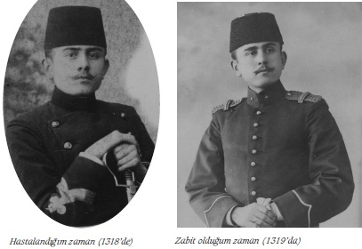

Ramazan da kılıçlı gezmek hepimizin gözünde tütüyordu. İki senedir gözümüzün önünde kılıç takan üçüncü sınıfları gördükçe imreniyordum ve o günler pek uzak geliyordu. Nihayet bu ilk emele kavuştum.
Kardeşimle beraber Çarşıkapısı ’ndaki kılıçlardan birer kılıç aldık, eve geldik ve annemize bağlattık. Ellerinden öperek hayır duasını aldık: “Allah son günler versin. Millete hayırlı hizmetler görmek nasip olsun yavrularım. İnşallah zabitliğinizi de görürüm...” Ağabeylerimizin de ellerini öperek dualarını aldık.
Hısım akrabayı da dolaştık. Artık büsbütün adam olmuşum gibi geliyordu. Ramazan da bayramda Şehzadebaşı, Divanyolu her günkü gezme tozma... Fakat muhtelif Harbiye ’den gelen efendilerin hakları birbirine geçmesin diye Harbiye ’de müsabaka yapılacağı haberi üzerine tatil zamanlarımı pek de boş geçirmedim. Kardeşimin böyle şeylerle alakası yoktu, imtihanlara ben hazırlardım. Sınıfın ortasında olarak geçerdi. Fazlasına gelemezdi. Onun için kılıç zevkini o daha çok sürdürüyordu. Nihayet 1 Mart 1316 ’da Harbiye Mektebi’ne kaydolunduk. Artık hayatımızı kazanmış, istikbalimizi temin etmiştik. Baba maaşlarımız kesilmiş, kısmen anneme zammolmuştu. Fakat artık sıkıntılı günleri atlatıyorduk.
Adam olmuş gibi kılıçlı görünce bütün aile halkı bizden çok seviniyordu.
1316, 1317, 1318 [1900, 1901, 1902] senelerim Harbiye ’de geçti. Müsabakada dördüncü olmuşum. Bazı sahabetlerin müessir olduğunu herkes söylüyor. Neyse... Apolet numaram 1.602 ’dir. Sınıfımızın mevcudu 1.000 ’i aşıyordu.
Sekiz kısım yaptılar. Topçu mektebine de bazı efendiler gitti. Tek kısımlar Almanca, çift kısımlar da Rusça okuyacak. Rusça nın pek zor olduğunu ve sonu da ölü olduğunu işiterek çift kısma düşenler çok sıkılıyorlardı. Alman muallimlerin bulunuşu ve Almanya ’da tahsil görmüş bazı muallimlerimizin cakalı Almanca görüşmeleri tek kısımlara düşenleri sevindiriyordu. Ben o kadar sıkılmadım... Esasen tabiatımda fazla sevinmek ve fazla sıkılmak yok. Buna talihim dedim. Mesele Rusça yı iyi öğrenebilmek idi. Aynı zamanda Fransızca da okuyorduk. Ben ve kardeşim piyadeye ayrıldık. Kısmımızda süvariler de vardı. Harbiye birinci sınıfın en güç dersleri Rusça ile hendese-i resmiye idi. Ben o kadar zahmet çekmiyordum fakat efendileri bu dersler pek eziyordu.
Müzakerelerde, bilhassa hendese-i resmiye den, defterini kapan bana gelir, ders sorardı. Bunun için bu güç derslerde çok kuvvetleniyordum. Rusça nın bellenmez kaidelerini Kuleli ’deki gibi vezinliyordum. Ve sorgulara yanlışsızca seri cevaplar verdiğime muallimlerim de hayret ediyordu.
Gayet çabuk yazıyordum. Nokta da atmıyordum. Bu suretle hocaların takrirlerini istediğim zaman aynen not ediyordum. Yazımı benden başkası da okuyamadığı için not defterlerim yalnız bende kalıyordu. Buna sebep Kuleli ’de bir defterimi, çalıştırmak vazifesini verdikleri bir zadegân (!)[36] kopye edeyim diye haftalarca getirmemiş ve getirdiği zaman da berbat bir halde bana vermişti. Kimseyi kıramıyordum. Defterimi isteyene vermemek veya sorduğunu derhal söylememek bana ağır bir şey gibi geliyordu. Noktasız yazıya başlayınca işim yoluna girdi. Kimse not defterlerimi istemez oldu. Dersleri daha evvel yaptığımdan notlarım kitaptan takrir edildi mi başlardı. Bazı hocalar elimizdeki kitaptan çok ayrılırlardı. Bunların menbalarını çabuk bulurdum. Kitapçılarda o derse ait ne kadar kitap varsa alır, karşılaştırırdım. Bu suretle not almak az şeye inhisar ederdi. Muallimlerin parlak cümlelerini aynen zapt etmeyi çok faydalı bulmuştum. Kuleli ’de buna dikkat etmiş ve imtihanda o cümleleri aynen söylediğim zaman beni hayret ve takdirle karşılıyorlardı. Şimdi de buna pek dikkat ediyordum.
Benim dördüncü kısımda belalılar pek çoktu. Dönekler, külhanbeyler, yetişmiyor gibi Erzurumlular, Bağdatlılar küme halindeydiler... Her iki tarafta beni pek sayıyorlar, derslerini öğrettiğim gibi Erzurumlular o havalide seneler geçirdiğimden, Bağdatlılar da Arapça bildiğimden hemşeri gibi tutuyorlardı.
Buna rağmen yapacakları kavgadan bana haber vermediler; pek ciddi hareketim, külhanbeylere ehemmiyet vermemekliğim dolayısıyla umum benden bir zabit gibi çekiniyordu. Hususiyle ilk hafta döneklerden büyük bir efendiyi bana karşı saygısız bir sual sorduğundan pek fena haşlamıştım. Bu mühim tesir yapmıştı. Kavgaya mâni olurum korkusuyla eski mahalle kavgalarını andıran bu çarpışmayı bana duyurmadılar. Ne oldu anlamadım...
Gece müzakeresinde bir Erzurumlu efendi su içerken, dersanelerde musluklu küpler vardır, bir Bağdatlı alay mı etmiş, bir ağız dalaşması oldu. Her iki tarafı teskin ettim. “Müzakerede mesuliyet üzerimdedir, paydosta anlaşırsınız” dedim, sustular. Fakat her iki taraf sıraların önlerindeki uzun tahtaları çıkarmışlar. Daha bazı hazırlıklar da yapmışlar. Sıralarımız at nalı gibi üç dıl ’ üzerine idi. Bağdatlılar topluca benim bulunduğum tarafta, Erzurumlular da karşımızdaydı.
Paydos borusu vurur vurmaz, her iki taraf sıraların üzerinden atlayarak birbirine giriştiler. Havagazları sallanan tahtalar ve değneklerden sönmeye başladı.
Hemen fırladım, dahiliyeye koştum. Sınıf zabitlerine haber verdim ve koşarak beraber kısma geldik. İçerisi meydan muharebesi. Kapı da kapanmış, kimse çıkamıyor. İçeride kavga edenlerden fazla uslu efendiler haykırışıyor. İyi ki bir an evvel ben dışarı fırlamışım. Güç halle kapıyı açarak zabitlerimiz içeriye girdiler.
Manzara müthişti. Zavallı Erzurumlular fena halde hırpalanmışlardı. Bağdatlılardan çoğu iri ve kuvvetlileri vardı. Bağdat ’ta zorhane denilen idman yurdu varmış, orada daimi beden terbiyesi ile meşgullermiş. Elleriyle ufacık yerden yapılı ‘T ’ şeklinde tutamakları tutarak yüzükoyun uzanırlar ve envai hareket yaparlardı. Bu meşguliyetleri zaferle neticelenmişti. Fakat en kuvvetlileri bu zaferin cezalanarak acısını çekti. Eğer tez haber vermeseydim, Erzurumlular için felâket olacakmış. Bundan sonra bana karşı daha ziyade hürmetli bulundular. Bağdatlılar da kızmadılar, çünkü onlara da vazifemi yaptığımı ve eğer vaktinde haber vermeseydim belki cinayetler olacak ve bütün Bağdatlıların sebeb-i felâketi olacağını anlattım. Bunlar da dua ettiler.
Artık kısımda pek kuvvetliydim. Erzurumlular ve Bağdatlılar pek uslandılar. Her iki tarafı barıştırdım. Geriye birkaç İstanbul külhanbeyi kalıyordu.
Sekiz kısımdan en belalısı benim kısımdı. Bunun kerametini sonra anladım. Kuleli ’deki sınıf zabitlerimiz benim zapturapt kuvvetimi Harbiye ’deki zabitlerimize anlatmışlar. Bunlar da Erzurumlular ve Bağdatlılarla –ki ekserisi dönekti– beraber İstanbullu külhanbeyleri benim kısma doldurmuşlar.
Ben daha ilk günü efendilere şu teklifi yaptım: “Arkadaşlar ders hususunda size her türlü yardımı yaparım. İstediğiniz zaman bana ders sorabilirsiniz. Kendi işimi bırakıp size ders anlatırım. Fakat müzakerelerde yahut mesuliyetim altında bulunduğunuz yerlerde bir zabite olduğu gibi bana hürmet edeceksiniz. İçinizden birinin değil dönmesi, izinsiz kalması bile beni çok müteessir eder. Buna karşılık olarak siz de benim mesul olmaklığımdan teessür duymalısınız. Bu karşılıklı teessür duyma bizi samimi bağlamalıdır.”
Bütün kısım bu suretle bana söz vermişti. Meydan muharebesinden sonra barıştırdığım Erzurumlu ve Bağdatlıların samimiyeti daha ziyadeleşti. Kardeşim Hulusi Bey ’i de kısmıma almıştım. İyi arkadaşlarım da vardı. Onun için diğer külhanbeylerden hiç korkum kalmamıştı.
İlk haftalar onlarla da iyiydik. Fakat bir hadise aramızı bozdu.
Dersten evvel yoklama yapardık. Mevcut olmayanların isimlerini bir pusulaya yazıp hizalarına nerede olduklarına işaretle gelen muallimlere vermek Harbiye ’de dahi usuldendi. Bir gün benim nöbetimde bu yoklama pusulasını doldurdum, hocaya verdim. Hoca ders sormak için cebinden isim defterini çıkardı, okuduğu isim Eşref Efendi Yıldız, Padişah’ın kuşçubaşısı nın oğlu. Sınıfımızın en kuvvetlisi. Şurada burada değil, pehlivanlarla güreşir, muallim kürsüsünde iki eli üzerinde kalkarak havada vücuduyla idmanlar yapar, vücudu da müthiş kuvvetli... Sırtı da... (yani iltimaslı.)
Muallim bu efendinin nerede olduğunu sordu. “Ben, yoklama ederken, ‘Efendim ’ cevabını vermişti” dedim. Sonradan kapıdan da çıkmamıştı. Bu kayboluş hepimizin tuhafına gitti. Muallim tekrar efendileri yoklama etmekliğimi emretti. Ne göreyim, kısmın azılı külhanbeyleri meydanda yok! Bunlardan biri, meşhur yine bir pehlivan olan Ömer Fevzi Kadıçeşmesi idi.[37]
Bunu Kuleli üçüncü sınıfta esrar içerken yakalatmıştım. Bir baş derdiydi. İkinci yoklama pusulası birincisinden hayli farklı görülünce muallim kızdı ve bana çıkıştı. Çok canım sıkıldı:
“Efendim ben ilk yoklamayı okurken gözümle bunları gördüm. Sonra da şu karşımdaki kapıdan dışarı çıkmadılar...”
“Yerin dibine mi battılar, bulacaksın bunları.”
Ben, “Müsaade buyurun, bulur yerlerini haber veririm ancak dersten sonra mümkün olabilir efendim” dedim.
Muallim, “Bulamazsan cezayı sen yiyeceksin” dedi.
Paydosta efendilere dedim ki: Maruz kaldığım vaziyeti gördünüz. Bunların nerede olduklarını haber vermek borcu umumunuzun haysiyet ve şerefine ait bir iştir. Herkes yemeğe gittikten sonra bir efendi gördüğünü söyledi. Hayret... Kısmımız cami ittihaz olunan yere bitişik. Pencereler var fakat demir parmaklıklı... Bir parmaklığın yanını duvardan sökmüşler, kapı gibi olmuş. Yoklama “Efendim” diyerek kendilerini gösterdikten sonra buradan sessizce cami tarafına kaçmışlar, güreş idmanları yapıyorlarmış. Bu pencereyi muayene ettim, belli bile değil. Söktükleri demir parçalarını eğreti olarak yine yerlerine koymuşlar, çekince çıkıyor ve parmaklık kapı haline geliyor.
Sınıf zabitine işi anlattım... Muallimimiz de külhanbeyi kafilesinin yediği haltı anlattı. Memnun oldular. Fakat sınıf yüzbaşımız Hasan Tahsin Bey[38] işi iyi idare edemedi, sebep de Eşref ’in Kuşçubaşızade olması idi. Eşref ’i çağırmış ve benim şikâyet ettiğimi, bir daha böyle şeyler yapmamasını tembih etmiş. Bunun yüzü suyu hürmetine diğerleri de affolunmuş.
Paydosta bir iki uslu efendi ile yalnızdım. Eşref geldi bana çattı. “Sen bizi niye zabitlere şikâyet ettin? Sanki bize karşı ne yapabildiler. Sana karşı hürmetimiz vardı. Fakat böyle giderse külahları değişiriz, bana bak!..” dedi. Yerimden bile kıpırdamadım. Çünkü onunla vuruşacak kuvvetim yoktu. Ondan pek küçük ve çok da kuvvetsizdim. Bana yardım edebilecek kimse de yanımda yoktu. Sözle bunu yere vurmaktan başka yapacak bir şeyim yoktu. Susmak da onu cesaretlendirmekti. Belki bana vurabilirdi... Sükûnetle dedim ki:
“Eşref Efendi ben seni mert bir adam tanıyordum. Bu sözlerin beni şüpheye düşürdü. İstiyor musun ki sizin yaptığınız bir kabahat için ben ağır bir ceza yiyeyim... Çavuşluğumu alacaklar ve beni idaresizlikle itham edecekler. Bu hal istikbalimi de mahvedebilir... Ben zannediyordum ki sizin için benim ceza görmekliğimi ben istesem bile sen istemezsin. Halbuki ben sizlerin yerinize ceza görmeyi de istemiyorum. Hususiyle size zabitlerin dahi bir şey yapamadığını gördüm. O halde beni ezdirmekte mertlik nerede?”
Eşref şaşırdı... Şikâyette hakkım olduğunu tasdik etti ve “Minareyi çalan kılıfını hazırlar” dedi. Ben de, “O halde çalacağınız daha başka minare varsa vaktiyle kılıfını da hazırlayın da kabahatiniz için bizim gibi uslu ve çalışkan efendileri vukuat sahibi imiş gibi cezaya çarptırmayın” dedim.
Savuştu gitti... Artık bu grupta da cüret azaldı. Sonra da mektebe sarhoş gelerek dahiliye önünde kılıcını atarak nara atan Kadıçeşmeli alaya gitti. Eşref de sürgüne gitti.
Kısmım büyük sükûnet içinde yürüdü. Harbiye ’de dahi benim bulunduğum yere zabitlerimiz gelmezdi.[39]
Terbiye-i askeriyeden hususi imtihanda garip bir sual sordular. Resmi selamı ifa ederken ne gibi şeyleri yapmamak memnudur? Ben bu sualin dikkatsizlikle tertip olunduğunu kabul ettim ve cevabını doğru yazdım. Fakat bütün sınıfın yanlış cevap vereceğini tahmin ettim. Çünkü sathi okununca, “Resmi selamı ifa ederken ne gibi şeyler yapmak memnudur?” anlaşılması tabii idi.
Derste de bu sualin cevabını okumuştuk. Halbuki sorulan “yapmamak memnudur”, “yapmak lâzımdır” demekti. Hocamız çok izinsiz bıraktığından pek çokları izinsiz kalacak diye acıdım ve cevabı çabuk yazarak kâğıdımı teslim ederken sualdeki iki menfiden müspet mana çıkaramayan efendilerin mes ul edilmemelerini rica ettim.
Muallim zabit hayretle kızdı. Benim cevabımı okudu ve sıfırı sen aldın, dedi. İtiraz ettim, daha çok kızdı, ben de asıl bu dersin muallimi olup yüzünü bu imtihanda gördüğümüz paşa ya müracaatla şikâyette bulundum. Sualin yanlış tertip edildiğini itiraf etti ve dikkat ettiğimden dolayı beni takdir etti. Hayret kimse farkına varmamış. Hatta muallim bile fazladan beni haksız bulmuştu. Bu zatla bir de dersanede başka bir meselede çekiştik. Meyilli arazide mıntıka-i mühlikenin vaziyeti hakkında şekil üzerinde izahat vermişti. Fakat bu iddia meyil biraz sonra başlarsa oluyordu. Meyil, atıcının ayağı dibinden başlayınca bu iddia doğru olmuyordu. Derste hocamızın aksiliği vardı. Biz birinci ve dördüncü kısımlar piyade ve süvariler ayrı ders gördüklerinden bir arada terbiye-i askeriye dersini alıyorduk.
Muallimimiz bugün pek aksiydi. Hep çavuşları kaldırıyor ve izinsiz yazıyordu. Beni de kaldırdı. Bu son derste okuttuğu suali sordu. Ben de bu davanın her meyilli araziye gelmediğini söyleyiverdim. Dehşetli kızdı. Derhal başlangıcından itibaren araziye meyil vererek iddianın doğru olmadığını tahtaya çizerek izah ettim. Muallim şaşırdı. Tabii izinsiz yazamadı. Bütün efendiler intikamımızı aldın diye paydosta beni tebrik ettiler.
Üçüncü sınıfın büyük efendilerinden birinci sınıfa tüfek hakkında malumat vermek ve nişan kaidelerini öğretmek için muallim efendiler gönderiliyor. Manga manga bunların etrafında sıra ile gönderiliriz. Bu surette hareket talimleri ve marş marş koşmaktan dinlenmiş oluruz. Bu efendilerin bazıları zabitlerden fazla kendilerine ehemmiyet veriyorlar.
Daha ilk temasımızda bu muallim ağır sözler söyledi. Diz üstünde nişan vaziyeti ve martin tüfeğinin aksamını öğretiyordu. Tarif bitince bana suale başladı. Fakat peşin iltifatı pek kabaca oldu ve izzet-i nefsimi kırdı. “Eğer cevap vermezsen ayıp olur. Hususiyle sınıfın en ilerisindesin” dedi. Derhal silahı bıraktım ve “Bu mukaddimeye neden lüzum gördünüz?” dedim.
Beklememiş olacak ki kızarak, “Karşı mı geliyorsun?” dedi. “Hayır, fakat şerefimle oynamaya size hiçbir kimse salahiyet vermediğini söylemek zaruretinde bıraktınız. Sualinizin cevabı büyük bir kıymeti haiz değildir. Böyle de olsa siz ancak onu sormaya ve eğer cevap veremezsem tekrar etmeye mecbursunuz” dedim. Ben de fena kızmıştım. Bu efendinin çavuşu gürültüye geldi ve muallimin haksızlığını görünce işi sükûnetle halletti. Bu vaka üçüncü sınıf muallimlerinin bize karşı pek nazik bir vaziyet almasına sebep oldu.
Hikmet ve kimya derslerinin tatbikatı çok hoştu ve bizi çok açıyordu. Gerçi askeri derslerin bilhassa yorucu tatbikatı arasında manasız gibiyse de eğlence yerine geçiyordu.
Hikmet hocamız dersaneye Ramsdan elektrik çıkarma aletini getirdi. Cam tablalar döndükçe elektrik çıkıyordu. Elindeki löklanşe pilini doldurdu ve diğer elinde de bir kâse içinde ispirto vardı. Pil ile ispirtoyu ateşleyerek anlatıyor ve tekrar için üfleyerek ispirtoyu söndürüyordu. Bir defa iyi yaptı. İkinci defa üflerken yanan ispirto sol elinin üstüne sıçradı. Eli yanınca çanağı fazlaca sallayıverdi. Bütün sol kolu yanan ispirtoya bulaşarak yanmaya başladı.
Hocamız bağırarak ispirto dolu çanağı dersanenin ortasına atıverdi. Dehşet!.. Ramsdan aletinin bütün alt tarafı alevler içinde kaldı. Zavallı muallimimiz askeri ümerasından zat da muallim kürsüsünde gözümüzün önünde haykıra haykıra yanıyordu. Ah vah sesleri de başladı. Bereket versin bir kuvvetli efendi yerinden atlayarak su küpünü kaldırıp hocanın omzundan aşağı boca etti. Bir diğeri de fesini –piyadeler fes, süvariler kalpak giyiyoruz– hocamızın yanan eline geçirdi. Hocamız kurtuldu... Yerlerin alevleri de suların fazlalığı ile söndü. Bu müthiş bir manzara idi. Muallim soğukkanlılıkla dedi ki: “Dikkatsizlik daima ceza getirir...” Zavallının eli günlerce sarılı kaldı.
Martin tüfekleri çakaralmaz olmuştu. Muhafız kıta efradı mavzerliydi. Efendilere ateş alır tüfek verilmiyordu. Sultan Aziz ’in hal ’inde Harbiyeliler bulunmasından Abdülhamid pek korkmuş. Bunun için battal martinlerle techiz olunmuştuk. İlk palaska kuşanıp tüfek aldığımız gün kılıç taktığımız günden fazla bir sevinç duydum. Artık tam manasıyla adam olmuştuk.
Harbiye ’ye giriş tarihi olan 1 Mart 1316 (1900), askere giriş tarihi sayılıyor. Kuleli sultani derecesini, yani sivil gibi. Artık asker olduk, kılıcımız var. Resmen tüfek de teslim aldık.
Sınıfın yine birincisi oldum. İmtihanları büyük muvaffakıyetle verdim. Mümeyyizlerin ve hocalarımın takdirlerini alarak imtihandan çıkıyordum. Askeri dersler de dahi teferrüd etmiştim. Her gün bütün derslerim tamdı.
Kuleli ’den Harbiye ’ye geçerken arkadaşlarıma verdiğim söz hakikat olmuştu. İki sene zahmet çek, bir sene rahat otur. Gerçi rahat oturmamıştım. Harbiye ’de çavuşluk daha zor. Nöbetçi çavuşu efendileri mektuplarını ellerine verip lâzım gelenleri arıyorlar. Sekiz kısmı dolaşmak çok güçtü. Hususiyle kısımlar bütün mektep içinde serpilmişti. Başçavuşluk çok rahat. Hususiyle sınıfta haşarı mahluk kalmamıştı. Sınıf mevcudu da yarıya yakın inmişti. Birçok dönek ve vefat verdik. Bilhassa veremden çok efendi öldü. Benim samimi arkadaşlarımdan bile. Hem mahalle arkadaşım, hem mektep arkadaşım, üç efendi birbirini takiben evlerinde öldüler. Biri bitişik komşumuzdu. İkinci ve üçüncü seneler dörder kısım olmuştuk. Kısımlarımız da deniz cihetinde aydınlık ve güzel manzaralıydı.
Birinci sınıfta karanlık, rutubetli ve berbat yerlerdi... Teneffüshaneler birbirinden geçilir bodrum katında Boğaziçi ’ne veya Maçka ’ya nazırdı. Buraya ara sıra arkadaşlarla kahve içmeye giderdik. İyi havalarda paydosu bahçede geçirirdim. İkinci ve üçüncü sınıflarda bahçede kalmak da manzaranın güzelliği ve aydınlık olmasından hoşuma giderdi.
Yanımda Bağdatlılardan iri ve kuvvetli bir efendi vardı. Pek uslu ve çalışkandı. Fakat bu sene pek zayıf ve hasta bir haldeydi. Bir gün cep takvimine bir şey yazarken merakla ben de okudum: “Bugün hava güzel, ben de iyiceyim. Dün hava fena idi, ben de fenaydım...”
Eyvah, bu zavallı da geçen sene sınıfımızı kırıp döken melun vereme yakalanmış dedim. Ben bu şikâyeti verem döşeğindeki arkadaşlarımdan da dinlemiştim. Hıfzıssıhha dersini üçüncü sınıfta okuyacaktık. Ölen öldükten, kalan kaldıktan sonra... Vaziyetim müşküldü. Bu hasta arkadaşla yan yana ben de, onun solundaki zavallı efendi de birinci tehlikedeydi. Sınıf da tehlikedeydi. Dikkat ettim, kısa kısa öksürüyor, halsizlik ve terden şikâyet ediyor. Dedim arkadaş, hemen hastaneye git. Bütün hastalığın arazını ve bilhassa takvimine yazdığın satırları doktorlara oku. Böyle yapmazsan hayatını tehlikeye bırakmış olursun.
Bu arkadaş bana teşekkür etti, hemen hastaneye çıktı ve bir daha da sınıfa gelmedi.
Daha birinci sınıftayken muhtelif hareketleri sabahları bir saat kadar talim etmiştim. Meraklı arkadaşlara iyi oynayan üstümüzdeki sınıfta bildik bir arkadaşımız talim ettirmişti. En son İtalyan usulünü öğrenmiştik. Bu sene derse başlayınca çabucak hâkim oldum. Perşembe günleri de kan ter içinde oynuyordum. Sene nihayetine doğru muallimlerimizle oynayacak bir kuvvete geldim. Bilhassa hasmımın elinden kılıcı fırlatmakta maharet kazanmıştım.
Arkadaşlarımı güzelce döverdim. Vücudum 55 kiloluk, boyum ise 1.68 kadar olduğundan, çok da talim yaptığımdan ileri ve geri mahirane sıçrama hasmın hamlesini boşa getirir ve kendi vuruşlarımı isabet ettirirdim.
Son derslerimizde muallimimizi haşlamaya başladım. Çok takdir kazandım. Hem sınıfın birincisi hem de müthiş meç kılıç oynuyor diye hocalarımız da müthiş hayret ederdi. Birinciler şimdiye kadar vücutça atıl idi, diyorlar. Bir gün meç dersinde hocamıza mükemmel bir vuruş yaptım, kızdı. Mukabil bir devir tuşu pek sert yaptı. Meçimle çeldim fakat meçimin ucu yüzümdeki maskeden içeri girdi. Az kaldı sağ gözüm gidiyordu.
Efendiler korkudan, “ay, ay” diye bağrıştılar. Meç güçlükle maskeden çıktı, sağ şakağımı hafifçe çizmişti.
Meçin ucu maskenin arkasına değmekle içeride korkunç bir vaziyet almıştı. Muallimimiz de pek müteessir oldu. Bu dersten sonra daha dikkatli ve hünerli oynamaya başladım.
İmtihanda en iyi oynayan muhtelif efendilerle oynadım. Bizden evvel zabit çıkmış ve Beyoğlu ’nda hususi ders görmüş biriyle de oynadım. Ellerinden kılıçlarını havaya fırlatmakla ilk zaferi kazanıyordum. Tam numara olan 20 ’yi nadirattan olarak ben almıştım.
İmtihan arası fürûsiyet (at binme) imtihanında manejdeki havuzun fıskıyesinden pek susayarak su içtim. Birkaç gün sonra müthiş bir baş ağrısı ve üşüme ve kırgınlıktan rahatsızlandım. Hastaneye gitmek şu aralık acı bir şeydi. Birlikte ders çalıştığım arkadaşlarım da bunu istemiyorlardı. Biraz konyak bir şey bırakmaz fikrinde birleştiler.
Terletir, bir şey bırakmazmış... Ben bu yaşıma kadar ağzıma ispirtolu bir şey koymamıştım. Konyak nedir bilmiyordum. Sınıfımızın zadegânlarından biri vasıtasıyla bir kadehlik konyak aldırmışlar, kardeşimin de ısrarı üzerine birden içtim. Boğazım, mideme kadar yandı ve ısındı. Bir iyilik hissettim. Oh iyi oldum diye sevindim. Arkadaşları da sevindirdim. Yattım. Fakat sabah daha fena bir halde kalktım. Hastaneye gitmek ıztırarında idim. 7 Teşrinievvel sene 317/7 Recep 319 idi. Muayenede hastanede yatmaklığımı lüzum gösterdiler. Fakat hastalığıma teşhis koyamadılar. Ertesi günü fürusiyet nazariyatı imtihanı varı. Nöbetçi doktoruna rica ederek hastane koğuşunu terk ile imtihana gitmek üzere muallimlerin odası önünden geçerken birkaç muallimimiz, Kâzım Efendi Zeyrek bu ne hal? Bu hâlde nereye gidiyorsun, dediler.
“Vücudumda birden bir dermansızlık hissettim efendim, imtihana” dedim.
Yürüdüm, fakat dahiliye odasında pek fenalaştım. Oradaki sıraya yığılıverdim. Zabitler ve borazan neferleri kollarımı tuttular ve beni hastaneye getirdiler. Yatağıma gelince yatar yatmaz kendimi kaybettim. Doktorlar koşuştu. Yüzüme su serptiler. Açıldım. Etrafımda sınıf zabitlerimiz de vardı. Bu günü fena geçirdim. Yanımdaki arkadaşımın cep aynasını istedim. Dilim beyaz tüylü. Yüzüm sararmış. 9 Teşrinievvel 1317 [22 Ekim 1901] hastalığım humma-yı şibh-i tifovi olarak teşhis olunmuş. Kardeşim ve pek samimi birkaç arkadaşım da hastanede yanıma gelmişlerdi. Beni teselli ettiler, mektep içindeki hastanede bakılamadığımdan rahatım için faytonla Gümüşsuyu Hastanesi ’ne gönderilivermişim. İmtihanım bayram ertesi olacakmış... Duracak halim yoktu. Veda ederken kardeşim ve arkadaşlarım ağlıyorlardı. Ben o kadar bitkin idim ki ağlayacak ve ağlamak lüzumunu düşünecek mecalim yoktu. Gümüşsuyu ’nda mektebimize mahsus koğuşa yatırdılar.
11 Teşrinievvel ’de ağırlaştım. Halimi muntazaman takvime yazıyorum. Vakit vakit kendimi kaybediyorum. Sayıkladığımı yanımdaki arkadaşlarım söylüyorlar. “Arkadaşlarım imtihan oluyor, benim cürmüm ne ki geri kaldım” diyormuşum.
13 Teşrinievvel ’de beni tecride lüzum görmüşler. Koğuşta tedavime imkân yokmuş. Bahçenin bir köşesindeki tahta barakaya götürdüler. 14 ’te biraz iyiceyim. Aklım başımda, düşünebiliyorum, kendimdeyim. Gece yattığım odada iki ağır hasta var; ümitsiz imişler, kendilerinde değiller, inliyorlar...
Benim hararetim kırk dereceye çıkmıştı. 15 Teşrinievvel ’de kendimi kaybetmişim. Kendime geldiğimde 20 Teşrinievvel idi. Takvimde 5 gün boş kalmış. Buna hayret ettim. Bu günleri nasıl geçirdim bilmiyorum. Beni tedavi eden doktor kaç gündür viziteye geldiği halde bugün ilk görüyorum gibi geldi. İsmi Muzaffer Bey imiş. Pek nazik bir zat, bana çok iyi bakıyor ve iyileşeceğimi söylüyor. Başım pencere tarafında olduğundan bahçeyi göremiyorum. Karşı köşeye naklimi rica ettim. Bu suretle biraz ağaçları ve geceleri yıldızları seyrederim, dedim.
İstediğimi yaptılar. Diğer hastalardan biri hâlâ inliyor, diğeri vefat etmiş. Bana bakan nefer pek samimi bir insan. Bir gözü sakat olduğundan hastane hizmetçisi yapmışlar. Çanakkaleli... Buna biraz para verdim, bana biraz diğer hastalardan yemek getiriyor. Açlıktan ve perhizden pek usandım. Bana verilen şekersiz süt. 22 Teşrinievvel ’de ayakyolundan çıktıktan sonra birden gözüm karardı, olduğum yere yıkıldım. Gözümü açtığım zaman başucumda benim hasta bakıcının fatiha okuduğunu, yanımda doktor ve muavin birkaç kişinin bulunduğunu gördüm. Beni öldü zannetmişler. Doktor Bey benim ayakyoluna çıkmamı men etti. Beni ümitsiz bulduklarını hissediyorum.
Dört günüm pek fena geçti. Vakitler çok uzun geliyor, yanıma hiçbir arkadaşımı koymuyorlar. Kardeşlerimi bile geri çevirmişler. İçim çok sıkılıyor. Geceleri bir selvi ağaçlığının parlak bir yıldızı rüzgârla sallanıp açıp kapaması bana pek hüzün veriyor... Kaç gündür inleyen hastanın sesi kesildi. Ölmüş zavallı.
Bu hüzünle şu ufak şiiri yazdım:
Ölüm
Her gece bir selvi ve bir yıldız
Ve ben yalnız ve ıssız
Ölüme böyle gitmek pek zevksiz
Maksatsız ve sessiz
Ne fikrim işliyor ne de kolum
Yakışmıyor bana böyle ölüm
Hastabakıcı yanımdan ayrılmıyor, sanki evladı imişim gibi bana acıyor ve ne istersem bana getiriyor. Aç ölmeyi hiç istemiyorum. Buna bu temiz yürekli asker de dayanamıyor. Yanımdaki ufak aynama baktım, iskelet gibiyim... Dilim bembeyaz, tüylü gibi. Bana ne oldu böyle? Ben bir defa da Mekke ’de böyle hastalanmıştım. O zaman da doktorlar benden ümidi kestiklerinden her istediğimi vermişlerdi. Burada neden vermiyorlar, bilmem.
Ben aç ölmek istemiyorum ve neferim bana her şeyi getiriyor. 27 Teşrinievvel Cumartesi günü ağabeyim ziyaretime geldi. Tehlikeyi atlatmışım. Beni ilk gün yattığım koğuşa sedyeyle naklettiler. Nekahete girmişim. Beni tedavi eden Muzaffer Bey koğuştakilere şu tembihi verdi:
Arkadaşınız büyük tehlike atlattı. Fakat sakın kendisine verdiğimiz yiyecekten başka bir şey vermeyin, felâketine sebep olursunuz.
İçimden bu işe güldüm ve ben mükemmelen fırancalar, pirzola, pilav yiyip duruyorum ya dedim. Arkadaşlar geçmiş olsun dediler ve kurtulduğuma pek sevindiler.
Bu koğuştan ayrılalı on beş gün olmuştu, birçokları değişmiş.
Bana yine bir iki gün şekersiz süt vereceklermiş, bu habere çok sıkıldım. Kimse de bir şey vermiyor. Bereket mektepten gelen samimi arkadaşlarım vasıtasıyla biraz tozşeker aldırıp sütüme koydum. 29 Teşrinievvel Pazartesi günü artık diyetten kurtuldum. Kebap, muhallebi, fırancala verilmeye başlandı. 30 ’da dilimin kenarı kızarmaya, yani eski halini bulmaya başladı. 31 ’de vücudumda büyük kuvvet hissettim, çıksam bütün İstanbul ’u dolaşırım gibi geldi.
Tecrübe için yataktan çıktım, fakat hizmetçi kolumdan tuttuğu halde ayakta duramadım. Vah vah dedim...
Daha kafamla ayaklarım birbiriyle anlaşmamış. 1 Teşrinisani Perşembe günü artık iki gün sonra taburcu olacağımı ve iki ay tebdil-i hava vereceklerini söylediler. Tebdil-i hava istemem. İstanbul ’dan iyi tebdil-i hava yeri olur mu? Evimiz de İstanbul ’dadır. İki ay evime rapor lütfedin, dedim. Peki dediler...
3 Teşrinisani’de Gümüşsuyu Hastanesi ’nden çıktım. 26 gün bu hastanede tedavi olunmuştum. Hemen bir aydır hastaydım, hamdolsun kurtuldum diye seviniyordum.
Hamdi ağabeyim beni hastaneden aldı fakat ayaklarıma basamıyorum. Kapı önündeki faytona sırtta getirdiler.
Evde annemi görmek en büyük bayram oldu. Birbirimize sarıldık, ağlaştık. Ben ağır hastayken kardeşim Hulusi Bey ’i yanıma koymamışlar. O da gelip bunu anneme söylemiş, zavallı annem kendini yerlere atmış. Kâzım öldü, bunu bana açık söyleyin diye sabahlara kadar ağlamış, haykırmış. Kardeşlerimin teminatına rağmen bu gün beni gözleriyle görünceye kadar endişedeymiş. Kaç kere gelmek istemiş fakat ziyaretçiden men olunduğumdan muvaffak olamayıp daimi şüphe ve endişede kalmış. Şimdi evin içi bayram... Fakat ben yine yatağa halsiz uzandım. Eve geldiğimin altıncı günü iki haftalık inkıbazdan pek sıkıntı geçirdim, içime baygınlık geliyor. Ne aksi gözümün önünde de zeytinyağlı patlıcan dolmaları geziyor... Bunu annemden istedim, hısım akrabaların şefaatiyle bunu yedim. Derken kapıdan Ankara armudu diye geçen yemişçiden armut aldırarak bunu da yedim.
11 Teşrinisani’de yediklerimin cezası olarak müthiş bir sancıya tutuldum. Ertesi günü biraz hafifledi. 13 ’te içeri odaya kadar güçlükle yürüyebildim. Fakat 16 ’ya kadar sancı vakit vakit sıkıştırdı. 17 ve 18 ’de biraz hararet de bastı. Ayaklarım yanıyor, bu hal hayli zamandır oluyordu. 19 ’da ferahladım. Def-i tabii de başladı. 21 ’de aşağı yemek odasına yavaş yavaş indim; fakat perhizdeyim. Komşum doktor ara sıra geliyor. 26 ’da tamamıyla tabii bir iyilik hissettim. 27 ’de kardeşim ve arkadaşımla Şehzadebaşı ’na kadar yavaş yavaş gidebildim. Bir müddet istirahattan sonra eve gelebildim.
Artık iyi olmuştum. Bu gün beni de, beni sevenleri de pek sevindirdi. Nekahet devrinde zayıflığımın sebebini hasta iken perhiz etmediğime doktorum atfetti. Bir simit susamından bu hastalıkta ölmek mümkün olduğundan sıkı perhiz lâzımmış... Bağırsaklar zar gibi incelirmiş, ufacık bir şey delermiş. Ben bu işe pek hayret ettim. Mekke ’de hummaya tutulduğum zaman da mükemmelen yedim içtim, o zaman ümitsiz bulan doktorlar müsaade etmişlerdi. Bu sefer de ben bilmemezlikle ve aç karnına ölümün pek tatsız olacağını hissederek bu marifeti yapmıştım.
Doktora, bunlara ne dersin dedim. Binde bir müstesnası olurmuş. Gümüşsuyu ’nda ağır hastalara mahsus koğuştaki kurtulamayan hastalara ümidi kesince yemek vermişler, fakat bunlar binde bir olmadıklarından zavallılar ölmüş... Benim binde bir oluşum hoşuma gitti.
Hıfzıssıhhayı Harbiye üçüncü sınıfta okuyacağız. Ne münasebetsiz şey... Veremden yüzlerce arkadaşımız gitti. Ben bilmeyerek neler yaptım. Demek sağ kalan sıhhatinin muhafazasını öğrenecek. Kimin aklıysa diyecek yok...
Her sene Ramazan da Yıldız ’a iftara gidilirdi. İstanbul ’daki bütün askeri gece yatılı mektepler ve kıtalar gider, geçen sene gitmiştim. Bu sene hastalıktan yeni kurtulmuştum fakat kuvvetim gelmişti. İstirahatlı olduğumdan hafta yoklamalarına gitmiyorum. Sınıf arkadaşlarımla görüşmeyi çok arzu ediyorum.
Gerçi pek samimileri eve geliyordu fakat hepsini, mektebi, zabitlerimi görme arzusunu yenemedim, iftar günü mektebe geldim. Herkes etrafıma toplanıyor ve beni daha iyi bulduklarını söylüyorlardı. Beside olduğumu anlatıyorum...
Hayret, Yıldız ’a kadar yaya hiç yorulmadım. Başımın ayaklarıma eskisi gibi hükmettiğine pek sevindim. İftardan sonra usulen birer çil altın diş kirası da aldık. Ve yine âdet veçhile birkaç kafa dengi arkadaş bir arabaya atlayarak Şehzadebaşı ’nda biraz eğlendikten sonra eve döndük.
Ruhumda büyük bir hassasiyet var. Bu hastalığın bende bıraktığı garip bir hassasiyet. Hiss-i kable ’l-vuku gibi. Mesela evde ziyaretime gelen samimi bir arkadaşım eve yaklaşırken dimağımda görür gibi oldum ve “Kapıyı açın İsmail Efendi Zeyrek geliyor” dedim. Kapıyı açtılar ve onun geldiğini hayretle haber verdiler. Bu, arkadaşlarımın en samimi olanlarından idi. Onun da babası benim babamın öldüğü sene ve ikisi Mekke ’de ve koleradan ölmüşlerdi. İkimiz de aynı semtte oturuyor, Fatih, Kuleli ve Harbiye ’de aynı sınıfta okuyorduk. Derslerini ben öğretirdim, onun da bana müthiş itimadı vardı. Benim Erkân-ı Harbiye birinciliğiyle diploma alacağımı herkese iddia ile kehanet gösterirdi.[40]
Bayram Ertesi İmtihanım
Sınıfımız Pangaltı Harbiye Mektebi’nin en güzel kısmına nakledilmişti. Bilhassa benim kısım Boğaz ’a ve Yıldız ’a nazır olan köşedeydi. Henüz imtihanlarımın çoğu kalmıştı. Kısımda çalışmak imkânsızdı. Bunlara söz söylemek hakkını da kendimde bulamıyordum. Çünkü onlar üçüncü sınıf, ben ise henüz ikinci sınıf idim.
Sınıf zabitlerine rica ile mektep hastanesine naklettim. Ne tesadüf, hastalandığım zaman yattığım yatak boşmuş. Burayı bana verdiler fakat ilk fırsatta buradan kaçtım. Lambalar karşı tarafta olduğundan zahiri sebep de makuldü. Fakat bir hafta sonra Sertabip Mişel Paşa (ihtiyar bir İtalyan dı, pek titizdir, beni ilk tedavimde teşhis eden budur), “Sağlam efendinin hastahanede işi yok. Sen nelerden kurtuldun. Kaç bu hastaneden” dedi. Çarnaçar sınıfta mütebaki günleri geçirdim.
İmtihanımı büyük muvaffakıyetle verdim. Ve yine sınıfımın birincisi olarak hemen tam numaralarla üçüncü sınıfa geçtim. Fakat birkaç ay hafızama bir tuhaflık geldi. Efendilerin isimlerini unutuyorum. Dahiliyeden şu kitap veya saireyi isteyenlerin isimlerini isterler, sorarım, beni de yaz başçavuş diye bağıranlara bakıyorum, tanıyorum hatta nereli olduğunu da hatırlıyorum; fakat acaba ismi neydi?.. Ne berbat vaziyet. Bunu efendilere nasıl söyleyeyim.
Bereket bir kurnazlık aklıma geldi: Efendiler aynı zamanda birkaç efendi birden beni de yaz diyor. Yanlışlık olmaması için kim ismini yazdıracaksa ayağa kalksın ve ismini söylesin dedim. Bu suretle noksanımı kapadım.
Hamdolsun bu hal uzun sürmedi ve bu unutkanlık muhakeme kuvvetimin artmasına mucip oldu. Bir şeyi daha etraflı tetkik ve muhakeme edebiliyordum.
Arazide Şöhret Kazandım
İlk tabya tatbikatında Kababut sırtlarından Darülaceze’ye karşı bir ileri karakol meselesini emniyet ve keşif hizmetlerini araziye tamamıyla uygun bir halde yaptığımdan tabya muallimimiz pek takdir etti.
Ve ilk ameliyatta bu kadar uygun bir tertibat yaptığımı sınıf zabitimiz de gördüğünden aldığım “aferin”in mektepteki aksi daha da büyük oldu. Talim muallimlerimizin nezareti altında yapılan livanın yürüyüş ve yanaşık nizamda hareketleri günü de büyük muvaffakıyet kazandım. Liva kumandanı beni tayin ettiler. Sınıfın ikinci ve üçüncüsü de alay kumandanı idiler. Gerek ses ve gerekse işaretle umum mektep mevcudundan mürekkep olan livamı pek güzel idare ettim.
Harekâtı idare ederken muallimlerimiz atlarını bize vermişlerdi. Küçükten beri atla ünsiyetim vardı. Fürûsiyette de mumarese kazanmıştım. Liva paşalık vazifesini çok iyi ifa ettiğimden takdir olundum.
Ertesi günü gazetelerde bu manevra ve idaredeki liyakatim intişar etti. İstikbalim için bunun hayırlı bir şey olduğunu arkadaşlarım ve zabitlerim söylüyorlardı. Ben dinlerken çok utanıyor ve sıkılıyordum. Fakat nazariyatta olduğu gibi ameliyat ve tatbikatta da büyük tefevvuk kazandığımdan seviniyordum. Bu günlerde bir de idari meselede mühim bir mevki kazandım.
Şöyle ki: Mutfak nöbetçisi efendi ne yapar? Şimdiye kadar mutfak nöbetçiliğini çalışkan efendiler pek almazdı. Ekseriya büyük efendilerden dersle pek arası olmayanlar yaparlardı. İkinci sınıfta dahiliye nizamnamesini okumuştuk. Müthiş ezberdi. Yoklamalar, tablalar, muhtelif defterleri ezberden sorarlardı. Dahiliye muallimine bunun bu tarzda okutulacağı yerde cetvelleri yüzden anlatmak, doldurmak ve tatbikatını yapmak mümkün olan yerlerde dahi bu surette öğrenmek daha muvafık olmaz mı diye mütalaa beyan etmiştim. Bu sene karar verilmiş, sınıf birincisinden başlayarak sırayla her efendi nöbetçi efendisi olacak ve tablaları tetkik edecek. Bu emir mucibince sıra başladı. Ben bu emrin birinci mutfak nöbetçisi oldum. Tablayı iyice tetkik ettim. Kazana konan et ve erzakı da kontrol ettim. Yemekler dağıtılacağı zaman birtakım adamların ellerinde karavana yemek almaya geldiklerini hayretle gördüm.
Mektebin gazcıları, zabitan hizmetçileri, mektep nazırı Rıza Paşa ’nın emrettiği daha birtakımları... Hiçbirine verdirmedim... Dahiliye nöbetçi zabitliğine giren numune karavanasını da yine kazana boşalttırdım. Aşçıların yağlı silme karavanaları da mevcutlarına göre tashih ettirdim.
Az sonra nöbetçi yüzbaşısı telaşla geldi. “Sen ne yaptın. Mektep nazırının emri veçhile yemek alacak olanları kovmuşsun. Hepsinin yemeklerini ver. Sonra numune karavanası nöbetçi zabitlerine aittir. Bu usulleri bozmaya nasıl cüret ettin? Gönder bunları yerlerine...” dedi.
Cevabım: “Mümkün değildir, efendim. Çünkü şu tabelalarda buyurduğunuz yerlerin ismi yoktur. Efendilerin istihkakından şimdiye kadar usulsüz yenmiş. Eğer müdüriyetin emri varsa onu tabelaya yazmalı ve erzaklarını da kazana koydurmalı...”
Nöbetçi yüzbaşısı: “Ne cüret. Bu aleyhine fena netice verir.”
Ben: “Bize verilen emir geçen seneki okuduğumuz nazariyatın bu sene tatbikatını görmektir. Bu gün derslerden mahza geri kaldım. Aldığım vazifeyi öğrendiğim tarzda tatbik etmeye mecburum. Biz ordularda da efradın istihkakını şunun bunun emri ile suiistimal mi edeceğiz!.. Ben her mesuliyeti kabul ediyorum ve tabelada ismi olmayan hiçbir yere bir lokma bir şey vermiyorum...
Nöbetçi zabiti başını salladı ve gitti. Ben de yeniden gelenleri tekrar boş döndürdüm. Bu iş mektepte bomba gibi patladı ve sevinç uyandırdı. Fakat benden sonra nöbete girenler bu cüreti gösteremediler, yine eski vaziyet devam etti.
Bir Şarapnel Kovanı
Bir gün tatbikattan gelirken Vasıf Deraliyye isminde pek uslu ve saf, sınıf ve kısım arkadaşım Kâğıthane poligonu yakınında bir şarapnel kovanı bularak mektebe getirmiş. Esliha dersinde bunu muallimin kürsüsünün üstüne koyarak bunun ne olduğunu anlatmasını muallim kaymakam Tahsin Bey ’den rica etti. Tahsin Bey, hiç cevap vermeyerek dersine devam etti.
Dersten sonra muallimler odası kapısına beni çağıran muallimimiz şunları söyledi: “O efendi deli midir, ahmak mıdır? Benim başımı da belaya sokacak. Mektebe topçu mermisi getirilmiştir diye yazılacak... Bir jurnale top da getirileceği ve Yıldız’ın topa tutulacağı da uydurularak başımıza felâketler getirebilirler. Git, kovanla birlikte o sersemi de buraya getir.” Cevabım kısaca, “Başüstüne efendim”den ibaret oldu.
Kendi halinde olan bir muallimimiz bile istibdatın zehirlediği hava içinde ne vehimli olmuştu ve en rezil hafiyelere rahmet okutacak jurnal yazmaya karar vermişti. Dersaneye koştum ve Vasıf ’ı bularak dedim ki: “Kovanı gizlice bir abdesthaneye at. Hangi abdesthaneye girip çıktığına dikkat bile etme. Hocamız sorarsa, dersten çıkar çıkmaz attığını söyle. Ben şimdi gidip kendisine aynı cevabı vereceğim. O, kovanla seni getirtmemi emretti. Sükûnetini sakın bozma...”
Vasıf ’ı bu işi yapmaya gönderdim. Kendim de muallime tekmil vermeye gittim. Beni hâlâ odanın kapısı önünde bekleyen muallim telaşla sordu: “Nerde o efendi? Hani kovan?..”
Şu cevabı verdim: “Efendim, sizin telaşınızdan korkmuş, paydos borusu akabinde kovanı bir abdesthaneye atmış.”
“Bu aklı ona sen verdin. Hem de ben kovanı istedikten sonra... Buna şüphem yok, doğrusunu söyle” diye bana çıkışan muallimi şu cevabımla mahcup ettim:
“Efendim o talebeyi felâketten kurtarmaktan ziyade muhterem hocamı fena bir hareketten korumak için bunu ben akledip yaptırdım.”
Hocamız acı bir tebessümle odasına girdi, mesele de kapandı.
Yeni Mikyasların Tatbiki Lâzım
Evin odun kömürünü her sene ben alırım. Unkapanı ’nda Laz kayıklarında ucuzca olur. Bunlar bildiğimiz kıyye üzerine pazarlık eder, buna eski okka deriz. Fakat kantariye muamelesi yapılır. Kantar memuru aksi bir adam, aramızda ihtilaf oldu.
Bir memur olmasına rağmen kendisini halka hürmet ve emir vermek salahiyetine haiz büyük bir amir zannediyor. Bana haşin söyleyince dedim: “Arkadaş sen halka da böyle mi muamele ediyorsun? Ben sana memura yakışacak tarzda cevap vermeyi öğreteyim de günün birinde maruz kalmaklığın muhtemel olan fena akıbetten kurtulmuş olursun. Bak senin vasıtanla devletin hazinesi para kazanıyor. Senin kazancın da bu yüzdendir. Eğer bir müşteriyle mal sahibi arasında anlaşmamak olursa, senin kantarının gösterdiği rakamı 0,78 ile zarbedip, tarttığını eski okkaya tahvil etmekle her iki tarafı hükümet namına memnun etmiş olursun. Bu esasen kantar tutanın vazifesidir. Vazifeden sıkılmayın. Hususiyle bunu yapmakla iki insanı da memnun edeceksin.”
Sözlerimin ne tesir yaptığını ve benden sonrakilere ne gibi bir muamele yaptığını bilmiyorum. Yalnız önüne bakarak gitti. Ben de eve gelince bu münasebetsizliği bütün gazetelere yazdım: “Hükümet yeni okka, halk eski okka ne demektir? Muhakkak birinin kaldırılması lâzımdır. Eski mikyasların kaldırılarak, her hususta kolaylık olanı ile sıfırdan mürekkep yeni sistemin umum için kabulü çoktan gelmiştir. Kantar başı halk için bir sıkıntı yeridir. Hele üç çeşit uzunluk mikyası, zihinleri karıştırmak için aransa bulunmaz bir azizliktir. Merci; bu işi bir an evvel yapmakla halkın zarar ve rahatsızlığına nihayet vermelidir...”
Hayret... Hiçbir gazete mektubumu yazmadı. Adresimi de açık yazmıştım. Bugünlerde başıma gelen garip diğer bir mesele de bu teklife beni sevk etmişti.
Şehzadebaşı Camii avlusundaki salı pazarından evden sipariş olunan basma vesaire almıştım. Bazı hilekârlar el çabukluğu ile arşın kaydırdıklarından eve gelince mesafe şeridimle ölçtüm, eksik... Geri döndüm ve herife bir daha ölçtürdüm, tamam. Bereket hemen aklıma geldi ki çarşı arşını başka, pay arşını başka. Derslerimiz, askeri tatbikatlarımız ve nişangâhlarımız ise metre üzerine idi.
Buna kızarken kömür alma meselesinde dahi kantar memurunun münasebetsiz vaziyetini gazetelere yazmaklığıma sebep oldu. Bir aralık eski-yeni okkalar meselesi halloldu, yeni okka kabul olundu, fakat çok sürmedi. İrtica yaptılar, yine eski vaziyete döndü.
Hastalığımın bende bıraktığı garip bir hal... Eğer bir şeye fazla gülersem kahkahamı tutamıyordum, bir hayli gülüyordum. Bu hal bir sene kadar sürdü ve coğrafya-yı askeri dersinde fena bir hal oldu.
Bu dersin muavini bey Rus hududunu ders olarak anlatıyordu. Kendisi oralarda gezmiş, senelerce vazifeli olarak kalmış. En ince teferruatını biliyordu. Taş çıkıntıları, çalılıklar vesaire bu gibi değişmesi mümkün olan ve hatta olmayan bir sürü lüzumsuzlukları ders diye anlatıyordu.
Haritamız milyon mikyasında birkaç mühim noktayı gösteriyor. Kitapta dahi fazla şey yok. Hocamız Karadeniz’de Kopmuşburun’dan başladı. Bir müddet not aldım. Fakat bu manasız şeyleri yazmakla parmaklarım yoruldu. Kurşunkalemimi münavebeyle parmaklarımın arasında yazarak, baş ve şahadet parmağı istirahat ettirdiğim halde, elim yoruldu. Halbuki daha hududun başlangıç kısmından ayrılmamıştık.
Yanımdaki arkadaşım da hocamızın mütemadiyen tekrarladığı “velakin”leri her tekrarında seri bir not gibi yazıyor ve yanına bir sıra numarası atıyordu. Hocamız bunları pek sıklaştırdı, o da notunu gülünç bir tarzda süratlendirdi.
Ben notlarımı bırakarak yan gözle buna bakıyordum. Nasılsa makaraları koyuverdim. Ömrümde bu kadar utanç vaziyete girmemiştim. Nasıl gülme... Yaptığım iş değil. Kimsenin de bu kadar güldüğünü görmemiştim. Hoca takririni kesti. Herkes bana bakıyordu. Dudaklarımı ısırıyordum. Kabil değil... Seyr-i lâzımını yaptı, asabım sükûnet buldu. Ben de sustum. Muallim Bey sükûnetle bakıyordu. Sınıf birincisi ve en uslu bir efendinin bu haline kızmadı.
Neden o kadar güldüğümün sebebini sordu. Not tutamadığımdan sıkıldım, sinirlerime hâkim olamadım, affedin efendim, dedim. Takririne başladı. Bir daha bir halt ederim korkusuyla notu da bıraktım, yanımdaki arkadaşın tuhaflığı da hatırıma gelmemesi için sol kolumu sıraya dayadım, elimle de başımı tuttum.
Az sonra hocamız, “Ne o başçavuş, neden not tutmuyorsun. Darıldın mı? Bu tarafa bile bakmıyorsun” demesin mi? Bereket paydos vurdu. Bu münasebetsizlik de kapandı.
Bu hadise de benim sinirlerimin eskisi gibi başımın hâkimiyetine geçmesine sebep oldu. Bir daha istemedikçe gülmedim. Esasen olur olmaz şeylere ne kızarım ne de gülerim...
Harbiye üçüncü sınıf tahsilimi de muvaffakıyetle bitirdim. 23 Teşrinisani 1318 ’de mülâzım-ı sani olarak Erkân-ı Harbiye sınıflarına ayrıldım. Sınıfımın birinciliğini de muhafaza ettim. Umumiyetle numaralar kırıktı. Benim ekser dersler tamdı. Coğrafya-yı askeriden beş numaram kırılmıştı. Cem an tam numaradan belki üç numara noksandı.[41]
Sınıfımız Harbiye ’nin 56. sınıfıydı. 544 efendi, zabit oldu. Ben birinci, kardeşim Hulusi 199. olarak diploma aldık.
Harbiye sınıflarında da lâzımı gibi tasarruf yapmıştık. Haftada masrafım 10 kuruşu geçmezdi. İzinli çıktığımız zaman Pangaltı ’dan Zeyrek ’e yürüyerek gelirdik. Maaşlarımız hiçti. Kitaplarımıza kesildikten sonra cüz i bir şey kalıyordu. Fakat gerek evce ve gerekse biz iki kardeş büyük tasarruf yapmıştık. Evimizin üst katını da tamamlamıştık.
Biz Erkân-ı Harbiye sınıflarına ayrıldığımıza rağmen bizi de kuraya dahil ettiler. Halbuki üç sene sonra yeniden kura çektireceklerdi. İlk ben çektim: Hassa. Bu bir piyango idi. Çünkü İstanbul ’dan ayrılmak istemeyen zengin çocukları bunu parayla satın alırlardı. İltimas olmayıp da Hassa ’yı çekenlerin Trablusgarp ’a gitmesi çok muhtemeldi. Oralardaki kıtalar da Hassa ’ya merbut.
Kardeşim Hulusi Bey ’e üçüncü ordu çıktı. Merkezi Selanik. Serez, Üsküp, Manastır, İşkodra, Yanya dahil... İki kardeş düşündük: Eğer Hassa ’yı kardeşimle değişsem ya Trablusgarp ’a giderse, yazık. Halbuki 44 altın peşin veriyorlardı. Ben erkân-ı harp çıkınca üçüncü orduya gitmekliğim mümkündü. O halde iki kardeş orada birleşir, annemizi de yanımıza getirebilirdik. Bu kararı kabule de mecburduk. Zira ev yaptırma mecburiyeti altında parasızdık. Elbise bile yaptıramıyorduk. Bunu Cenab-ı Hakk ’ın bize bir lütfu telakkiyle hemen satarak kendimize elbise ve kardeşime yol eşyası, annemize de hediyeler almaya karar verdik.
Bir zengin arkadaşla becayiş yaptık. 44 altın aldım. Sevinçle eve geldim. 44 altın... Ailemiz için büyük bir servetti. Her istediğimizi yaptık. Kendimize harçlık bile kaldı. Kardeşime ve bana birer Rumeli şimendifer tahvilatı da aldım. Bütün evi de sevindirdim.
Geçen sene imtihan arası tutulduğum hastalıktan başka esaslı hasta olmadım. Kardeşimin sıhhati de iyiydi. Her hafta deniz hamamına devam ediyorduk. Bakırköy, Moda, köprü yürüyüş idmanımız ise talimler dolayısıyla mükemmeldi.
Benim kılıç ve meçteki muvaffakıyetim devam ediyordu. Çok çevik ve çok sıhhatliydim. Hıfzıssıha da okumuş ve imtihan da vermiştik. Vücuduma daha itina ediyordum. İnce uzun tipteydim. Safi vücudum 56 kilo.
İtikatta ve ahlakımdaki salabet mükemmeldir. Yalnız bu sene ibadet faslı gevşedi. Hasta oluncaya kadar büyük bir dikkatle abdest, namaz, oruca devam ettim. Sonrası vücuduma büyük dikkat lüzumundan bu işler ihmale uğradı. Fakat salabetim bozulmadı. Memleket ve millet muhabbeti çok gönüldendi.
Ağabeyim Hamdi Bey ile istibdat ve hürriyet üzerinde konuşuyorum fakat daha üç sene tahsilim bu işleri esaslı düşünmekten beni men ediyor.

Ramazanın ortalarına gelmiştik. Kardeşimle şık zabit elbiseleriyle gece Şehzadebaşı ’nda gezdik ve at cambazına girdik. İki kanun geldi. Benim yakamda namzet işareti olarak yıldız vardı. Evvelce erkân-ı harp sınıflarına az efendi ayırıyorlar ve erkân-ı harplere mahsus sırmalı yakayı takıyorlardı.
Üç senedir 40-50 efendiyi alıyorlar ve erkân-ı harp namzedi diyorlar. Bunların içinden 14-15 efendi numaralarına göre erkân-ı harbe ayrılıyor. Kanunlar bana bir şey sormadılar, kardeşimin yanında yavaş yavaş konuştular. Meğerse Sultan Hamid ’in ramazan ın ortasında yapacağı hırka-i şerif selamlığında yeni zabitlerin İstanbul ’da bulunmaması, ordularına gönderilmesine dair irade çıkmış.
Kardeşimi merkez kumandanlığına istediler. Ben de beraber gittim. Bütün sınıf arkadaşlarımızdan zabit olanlar da orada bir koğuşa doldurulmuş. Hulusi Bey kardeşimi de oraya koydular. Ne olacak bunlar? Niçin daha ilk zabitlik zevkine doymadan bunları hapsediyorsunuz diye oradaki kanun zabitine çıkıştım. Havyan gibi herifler... “Biz emir kuluyuz, ilk vasıtayla çıkan zabitler ordularına sevk olunacak. Emir böyle” dedi. “Peki bu tazyike ne lüzum var? Bırakın evlerine gitsinler... Kendileri ordularına ilk vasıtayla gitsinler” dedim.
Merkez kumandanı makamında yokmuş. Yarın söyleriz, dediler. Allah hepinizin belasını yakında versin, diye içimden söylenerek yeisle eve geldim. Hulusi Bey ’in başından geçeni anlattım. İlk zabitlik zevkini böyle kıran Abdülhamid ’e ve maiyetine hayli beddualar edildi. Dünyada müstebitler kadar aptal düşünceli kimseler var mı acaba? Yeni çıkan ve sadakat yemini eden zabitleri yeminlerini geri alma ve bu murdar idareyi devirmeye kendileri sebep olmuyor mu?..
Ertesi günü merkez kumandanına gittim. Kefil olarak kardeşimi kurtardım. Birçokları kanunlar nezaretinde trenlere, vapurlara gönderiliyordu. Ben hiç olmazsa kardeşimin annem ve kardeşlerimle bir son yemek yemek, hazırlanmak ve veda etmek fırsatını kazanmıştım.
Kardeşim trenle Selanik ’e gitti.
Ben de bir hafta sonra İzmit ’teki ağabeyim Yüzbaşı Hilmi Bey ’in yanına hareket ettim. Maaşlarımızdan toplananları almak vazifemdi. Ramazan ın yirmi beşinci günüydü. Sonbaharın yağmurlarından Gebze ’de bir yar yıkıldı. Trenimiz iki yüz metre kala bu yıkılma olmuştu. Birden durdu. Büyük tehlike geçirdiğimizi anladık. Bayır aşağı tren sürüklenebilirmiş. Yardan düşen taşlara çarparak vagonlar parçalanabilirmiş... Başımıza gelenler... Bir gecelik iş varmış, Gebze ’de vagonda geceledik.
İzmit ’te birkaç gün kalarak İstanbul ’a döndüm ve Erkân-ı harp mektebine lâzım olan hazırlığı yaptım.
Erkân-ı Harbiye Mektebi ’nde Üç Sene
1319, 1320, 1321 senelerim Erkân-ı Harbiye tahsiliyle geçti. Harbiye ’de piyade olduğumuzdan üç Erkân-ı Harbiye senesini süvari geçireceğiz. Süvari elbisesi giyiyorum; kalpak, tek düğmeli ceket, rütbe alameti kolda ince sırma şerit (fırdolayı). Omuzda da sırma burmalı apolet. Pantolon yeni kabul edilen mavi renk. Pantolon zıhı üç parmak eninde kırmızı. Çizme ve mahmuzlar. Piyade zabiti kisvesinden pek parlak. Yakamızdaki yıldız hoşumuza gitmiyor. Jandarma küçük zabitleri de böyle.
Erkân-ı Harbiye sınıflarının itibar mevkiini gittikçe küçültüyorlardı. Her sene dersler başlayınca üst sınıflar birinci sınıfa “hoş geldiniz”e gelirlerdi, bunlarda ziyaret-i iade ile onlara teşekkür etmek âdetti.
Bunu son biz tatbik ettik. Emir verdiler, bir daha sınıflar birbirlerini ziyaret etmeyecek... Bu hadise ruhlarımızda isyan uyandırmıştı. Başlarımız ilim ve irfan nuruyla doldukça tazyike karşı nefret ve isyan hislerimiz çoğalıyordu.
Hislerimizin bir şey yapmak istediği derslerin şu başlangıç devrinde bizim Kuleli ’deki makine hocamız erkân-ı harp Binbaşısı Bey, Erkân-ı Harbiye birinci sınıfa hitabet hocalığına geldi. Beni sınıf birincisi görünce memnuniyetini bildirdi ve böyle bulacağını tahmin ettiğini söyledi.
Bu iyi... Fakat sınıfa hitaben söylediği ilk sözlerinde büyük bir gaf yaptı. “Sizin gibi bir güruha muallimliğe geldiğimden memnunum” diye söze başladı. Bütün sınıfın hassas sinirlerini lâzımı kadar gerdi.
Paydosta sınıfı terk ettikten sonra herkes aleyhine veriştirdi. Bize nasıl “güruh” diyor diye iş alevleniyordu. Önledim... Bunu hakaret makamında söylememiştir.
Çünkü bu zattan bir sene ders gördük. Kaba ve hürmetsiz bir adam değildir. İdadi efendilerine karşı bile nezaket gösterirken bize kaba muamelesine mana yoktur. Nasılsa, ağzından kaçmış olabilir. Devam edecek muamelesine bakalım diye sınıfı yatıştırdım...
Şikâyet etmek, kendisine söyleyerek bu sözü geri aldırmak isteyenler, grev yapmak fikrinde olanlara karşı benim teklifim galebe çaldı. “Peki” dediler. Fakat hocamız ilk vazifeleri pek fena hırpalamıştı. Hem de birçok tashihleri haksızdı. Bu, işi fena mecraya döktü. Herkes paydosta söyleniyor, alay ediyordu. Bize iyi makine okuttuğu halde askeri hitabet dersinde zayıflığı hissolunuyordu. Biz Harbiye ’de bu dersi okumuştuk. İçimizde pek güzel yazanları da vardı. Hocamız verdiği vazifeyi kendi de yazmış, fena birkaç mühim kaide hataları olduğu gibi kalem ve hatta fikir bile zayıf...
Bu elde müthiş bir taarruz silahı oldu. Esasen Kuleli ’de makine dersinden notu kırılan birkaç efendinin hıncı da eklendi. Artık bana susmak ve kararı beklemek kaldı. Herkes bir fikir söyledi ve nihayet şu fikir sınıfın fikri olarak ortada canlandı: Hocamız derse geldiği zaman verdiği ikinci vazifeyi vermemek... Vazifeleri sınıf birincisi sıfatıyla ben toplardım. Kimin yanına gidersem, “Daha bitiremedim” diyecek ve benden de istenirse ben de böyle söyleyecektim. Şeref ve namus üzerine söz isteriz dediler, hep bir ağızdan kabul dedik.
Bir de geçen vazifenin, muallim tarafından gönderilen, siyah tahtaya yazılacak ve yanlışları tashih olunacak. Bu suretle müthiş intikam alınacaktı.
Zannolunuyordu ki bu ağır muamele karşısında bu zat vazifeden çekilir veya muamelesi başka bir inceliğe dökülür... Şiddet tatbikine cesaret edemeyeceğini kabul ediyorduk. Sebebi, bize güruh demişti. Bu hakaretle mukabele-i nefs olunacaktı.
Dersinde hesap yaptığımız gibi çıkmadı. Gelir gelmez, “Vazifeleri toplayınız Kâzım efendi” emrini verdi. 15 efendi karar veçhile daha bitirmedim deyince, muallimimiz dedi: Ya, anlaşıldı... Siz yazdığınızı getirin.
Cevabım: Efendim, ben daha bitiremedim... Muallimin rengi sarardı, derin daldı. Belki dersaneyi terk edecekti. Vaziyeti pek müşküldü. Benim vaziyetim de pek nazikti. İki efendi işi berbat etti. Vazifelerini bana uzattılar.
Muallim onlara teşekkür etti ve bana kızgın bir çehreyle, “Yerinize oturunuz” dedi. Aldığı vazifeleri cebine koydu, başını geriye çevirdi. Bu sefer de tahtada yazısının tashihlerini görmez mi!..
Paydosa kadar başını bize çevirmedi ve gözlerini tahtadan ayırmadı. Paydos borusunda selamsız çıktı gitti... Sınıfta vazife veren iki efendiye karşı lâzımı gibi hakarete başladılar. Ve bu işte bazılarımızın yanacağı ve bunun birincisi ben olacağım ileriye atıldı. Çünkü vazifeyi yapmadıklarını efendiler bana pek hafif bir sesle söylemişlerdi. Ben ise yüksek sesle muallime cevap vermiştim. Vaktiyle beni tanıdığı ve birinciliğimden memnun olduğu halde beni böyle isyanın başında görmesi bana da acı tesir yaptı. Sınıfa şu teklifi yaptım: “Arkadaşlar, maddi ve manevi ne zor bir mevkide kaldığımı gördünüz. Şahsım için mukadderata tabi kalabilirim. Fakat pek ağır olan bu mukabeleyi mütevazin bir hale getirmeliyiz. Vazife veren efendiler gitsinler, ‘Sınıfın yaptığı bu bir itaatsizlik ve hürmetsizlik değildir. Kırılan haysiyetlerinin tamiri düşüncesiyle yaptıkları bir harekettir. Muallim Bey bizlere karşı lâzımı olan nezaketten ayrılmadıkça kendisine karşı bizler de hürmet ve itaatten ayrılmayacağımızı ’ söylesinler.”
Bu teklifim kabul olundu. Bazıları, bunu bizzat sen yapmalısın, bu efendilerin bu sefer de iş bozanlık etmesi düşünülmelidir, dediler. Bu aralık Muallim Bey de beni istemiş. Vazife bana verilmiş, ben de bunu mükemmelen yaptım.
Muallim Bey ile sınıf arasında samimiyet başladı. Felâkete uğrayan da olmadı.
Harbiye üçüncü sınıf sonlarında bir gün birkaç samimi arkadaş görüşürken bahis musıkiye intikal etti. Ben, ne alaturka ne de alafranga parçalar veya kaideler bilmiyordum. Gerçi sesim pek güzel ve gürdür. Bir hayli şarkı da biliyorum. Güzel gazel de okuyorum. Fakat makamlarını, usullerini bilerek değil... Ve kimsenin yanında da okumam. Beş altı sene evvel birkaç defa elime kanun aldım, o kadar... Arkadaşlardan Zeyrekli İsmail Efendi kanun çalar. Ben kemanı pek sevdiğimi söyledim. Derslerde herkesten kuvvetli olduğumu her yerde söyleyen ve takdir eden bu arkadaş benim musıkiden de kendisinden ileri sözle olsun atıldığıma karşın çocukça şu cevabı verdi: “Sen, keman çalmak değil, ondan ses bile çıkaramazsın!”
Bu söz bana acı tesir yaptı. Keman nedir ki... Ben ses bile çıkaramazmışım. Bu samimi arkadaşımın yüzüne baktım ve fikrimden geçen şu kararımı gözlerine aksettirdim: Bir gün güzel keman çaldığımı sana itiraf ettireceğim.
Bu arkadaş da kardeşimle beraber üçüncü orduya gitmişti. Ben kapalıçarşının Hakkâklar cihetindeki bir dükkândan en ucuz bir keman aldım. Otuz kuruş verdim. Adam bana reçine istemez misin dedi, ne olacak bu dedim. Bunu yaya sürmeden keman çalınmaz, dedi. Hakikaten yayı sürdüm, ses çıkmıyor. Reçineyi sürdüm, mükemmelen ses çıktı. Eh, görürsün sen İsmail dedim ve kemana başladım.
Bir tel üzerinden basit türküleri daha ilk gün çaldım. Keman akordunu ve nota ve peşrevleri teyzemin çocuğu Hüsnü Bey ’den öğreniyordum. O, bir seneden beri muallimden keman öğreniyordu.[42]
11 Kanunusani 1318 ’de, daha derse başlayalı üç hafta olmuştu (20 Şevval 1320), akşam yoklamasında Harbiyeliler bahçede, “Padişahım çok yaşa” diye bağırırken biz de dersanede oturuyorduk. Yüzünü ilk gördüğümüz Müfettiş İsmail Paşa bizi gördü ve darıldı. Bugünden itibaren Erkân-ı Harbiye sınıflarının da koridorda yoklamaya çıkması emrolundu.
26 Mayıs 1319 [8 Haziran 1903] günü Mevlit Kandili münasebetiyle izinliydik. Kuleli ikinci sınıftan beri en samimi arkadaşlarımdan biri olan ve Erkân-ı Harbiye sınıfında dahi en yakın arkadaşım olan Seyfi Bey ’le Kadıköy ’den iki at kiralayarak Çiftehavuzlar ’a kadar at gezintisi yaptık.
Dönüşte cadde boyunca Fener cihetine yarış yaptık. Önümüzde yol amut bir vaziyette sağa ve sola ayrılıyordu. Biz sola dönerek Fener ’e gidecektik. Ben sağda, Seyfi Bey soldaydı. Atı sağa kıvrıldı. Seyfi vaktiyle yardımlarını hazırlamamış olacak ki mâni olamadı. At başı beraber gidiyorduk. Bu vaziyette ata hâkim olmakla beraber sola gitmekliğim müthiş tehlike olurdu: Ben de sağa çevirdim. Meğer dönek yerinde bir incir ağacı varmış, hemen hayvanın boynuna yaslandım. Kalın daldan kendimi kurtardım. Fakat ufak dallar kamçı vurması gibi suratıma müthiş çarptılar. Bereket atın süratini de birden kısmıştım, kalpağım düştü, dişlerim kanadı, sağ gözümün altı berelendi. Geldiğimiz yolun tam karşısında hanımlar oturuyordu. Kalın daldan korkmuşlar, müthiş bağrıştılar...
Attan düşmediğimi ve küçük dalların arasından sıyrılıp geçtiğimi görünce sevindiler. Düşen kalpağımı temizleyip verdiler. Teşekkür ettim, attan inmedik, yolumuza devam ettik. Bir hafta bu darbelerin acısını çektim. Bereler de bu müddet nihayetinde kayboldu.
Askeri dersler insana büyük şevk ve heves veriyor. Fakat bunların arasında riyaziye manasız bir şey... Birçok düsturlar ve nasıl bulundukları tafsilen okutuluyor. Askeri derslerle hiçbir münasebeti de yok... Bütün efendiler bu dersten şikâyetçi. Kafalarımızı beyhude hırpalıyor. Goltz Paşa gelmezden evvel “Kutû-ı ahcâr ve eşcâr”, “gülle istifi” gibi garip dersler de varmış. Bunları o zat kaldırmış. Okuduğumuz riyaziyat-ı aliye yi neden bırakmış anlaşılmaz şey... [43]
Bari düsturların nasıl çıktığı ve hatta ezberlemek olmasa. Tatbiki tarzda ve basit okutulsa. Bu fikrimi muallimimize –bu da erkân-ı harp ümerasından bir zat– söyledim, kızdı. Lüzumlu imiş, zihin açarmış.
Fransızca hocamız Fransız idi. Bundan da yarıdan fazlamız istifade edemiyordu. Çünkü Fransızca anlamıyorlardı. Ders nazırı, mektep müfettişi gibi insanlar ve bunların lâzımı gibi makamları vardı. Bir de o sene Mecis-i Maarif Askeri diye bir şey vardı. Mektep muallimleri burada fikirlerini beyan eder, layihalar münakaşa olunurdu. Fakat derslerle alakası olan makam yoktu. Rusça yı iyi Rusça bilir bir İslam dan okuyorduk. Fakat istifade birkaç meraklıya inhisar ediyordu. Almanca okuyan arkadaşlarımıza bir erkân-ı harp okutuyordu. Onlar da bizim gibiydiler...
Tabiye ve istihkâm derslerinde Alman muallimlerden istifade ediyorduk. Türk muallimlerimiz de daha evvel yetişmiş zatlardı. Yalnız ekserisi orduda hizmet etmemiş nazari zatlardı. İmtihan pek sıkı yapıldı ve pek yazık ki göz göre göre iltimaslar da yapıldı. Askeri derslerim iyiydi. Kitabet ten üç, riyaziye den 9, Fransızca dan 15 numaram kırılmıştı. Diğer efendilerin de dolgun numaraları yoktu. Riyaziye ve Fransızca dan bu kadar numaram kırılacak derecede fena cevap vermiş değildim. Haksız olarak ikinci oldum.
Bütün sınıf ve hatta muallimler de söylemişlerdir. Bu vaziyet beni seneye daha büyük bir gayret sarfına mecbur ediyor. Neyse, usul mucibince mülâzım-ı evvelliğe terfi etmiştik. Ordudaki emsallerimiz mülâzım-ı evvelliğe terfi etmek için senelerce bekleyeceklerdi.
57. Harbiye sınıfı vaktinden evvel imtihan edildi ve 19 Ağustos 1319 ’da zabit oldular. Erkân-ı Harbiye ’ye ayrılanlara “kohort” dedik. Bunlar derslere başladı. Makedonya İhtilâli bu sınıfın çabuk çıkarılmasına mucip olmuş.[44]
Kardeşim Hulusi Bey Manastır ’da idi. Bu sene Makedonya ’da Bulgarlar isyan etmişlerdi. Selanik, Manastır isyanların en kuvvetli merkezleriydi. Kardeşim Selanik divan-ı harb-i örfisi nde aylarca bu işlerle meşgul olmuştu.
Bu kardeşimi pek severdim. Çok göreceğim de gelmişti. Hem onu görmek hem de isyan hakkında malumat almak için büyük bir arzum vardı.
Annemi ikna ettim. Bir ramazan ortasında gelmek şartıyla Lloyd kumpanyasının Karniyoli vapuruyla Selanik ’e yollandım. Bu ilk uzun yalnız başıma seyahatimdi. Çok mütehassıs oldum, zevk duydum. Ben ikinci mevki kamara almıştım. Sınıfımızdan ve aşağı sınıftan tanıdığım bazı efendiler güverte almışlardı. Harbiye talebesiyle beraberdiler... Kendilerine bunun muvafık olmadığını, hususiyle sonbahardır, bir fırtınaya tutulursak güvertede rahatsız olacaklarını ve belki bir kazaya da uğrayacaklarını söyledim. Beni dinlemediler. Ben üç kişilik kamarada yalnız kaldım. Marmara Adası ve Çanakkale yakınlarından geçerken Mekke ’den gelirken on sene evvel gördüğüm bazı manzaralar gözlerimde canlandı. O zaman çocuktum. Şimdi delikanlıyım. O zaman aile içinde ve himayeye muhtaçtım. Şimdi yalnız başıma. Bu farkları düşünerek bu manzaraları bir daha seyretmek çok hoşuma gitti.
Fakat Boğaz ’ı geçtikten sonra müthiş bir fırtına başladı ve gittikçe azdı. Kamarama gelirken yalpadan tuttuğum bir kapı manivelası elimde kaldı. Beni de deniz tutmuyor fakat sallantı o kadar fazla ki, yatmaktan başka çare yok... Yemeğimi beraber getirmiştim, güzelce karnımı doyurdum.
Aklıma sözümü dinlemeyen arkadaşlar geldi. Kamarotu çağırdım, peşin bahşiş vererek dedim: “Bu iki yatak için sana müşteri bulacağım fakat yarı fiyatına. Şu şartla ki sen gidip güverteden onları alacaksın.”
Peki, dedi. Tarif ettim, gitti. Az sonra gürültülü bir gelişle, of aman feryatlarıyla ve kamarotun yardımıyla bu arkadaşlar kamarama geldiler. Benim de yardımıma muhtaç bir halde gördüğümden yerimden fırladım. Bunları kamarotla yataklarına yatırdık. Bu arkadaşlardan Naki Bey güverteyi aşan dalgalardan kaçarken düşmüş, omzu ambar kenarına çarpmış, köprücükkemiği de zedelenmiş.
“Omzum kırıldı... Ah, sözünü dinleseydim başıma bu felâket gelmezdi...” diyor. Kemiğini elimle yokladım, kırık görülmüyordu. Kendisini tatmin ettim... Diğeri Sami Bey deniz tutmasından bitkin bir hale gelmişti. Her ikisine biraz yiyecek verdim. Kendi yiyeceklerini dalgalar götürmüş. Zaten yiyecek halleri de yoktu. Kamaraya gelememişler, kamarotu gönderdiğime canıgönülden teşekkür ettiler.
Bu fırtına müthiş olarak İstanbul ’da da hükmünü yapmış. Duvar üstündeki saksılar kâmilen düşmüş. Zavallı annem çok ıstırap çekmiş. Beni eceline gitti zannıyla Selanik ’e vardığım haberini alıncaya kadar kıvranmış, vaziyetini de anlattı.
Selanik ’e çıkar çıkmaz Naki Bey ’in kolunu beraberce doktora muayene ettirdik, sardırdık. Kırık olmadığını öğrendik. Memnuniyetle ben Manastır trenine bindim. Vaktiyle babamın iki seneye yakın jandarma kumandanlığı yaptığı ve şimdi de kardeşim Hulusi Bey ’in vazifeten bulunduğu Manastır ’ı görmeyi sabırsızlıkla bekliyordum. Selanik Ovası’ndan sonra Karaferiye ve Vodina ’nın şelaleleri, çok miktarda ağaçları Anadolu ’da gördüğüm güzel yerlere benziyor. Soroviç ve Ostrova Gölü etrafından kıvrılış gönül açıyor. Nihayet Manastır Ovası ’nın güzelliklerini seyrederek karanlıkta Manastır istasyonuna çıktım. Kardeşim istasyon karakol muhafızı imiş, karakola gitmek için hat boyundan geri yürüdük. Bu karakol aynı zamanda şehrin ve kışlaların da muhafızı...
Merakla kardeşimi ve sınıf arkadaşlarımızdan bu işte bulunanları dinledim. Hazırlık müthiş olmuş. Hatta vilayet ve kumandanlık erkânını Manastır ’a yakın Bukova Manastırı ’na davet etmişler, fakat haber alınmış, gitmemişler. İsyanı idare eden Rus konsolosları... Nüzhetiye bahçesi önünde Manastır Rus konsolosunun katli de garip... Selam durmadı diye nöbetçi neferine tokat vurmuş. Nefer de tüfeğiyle herifi öldürmüş. Bu hadise kıyametler koparmış. Neferi divan-ı harp idam ettirmiş. Konsolosa tarziye verilmiş, tazminat verilmiş.
Asıl felâket, bizim sınıftan İsmail Hakkı ve Salih isminde iki zabit gazinodalarmış ve bu hadiseyi işitince, “Oh olsun kerataya... Nöbetçiye tokat nasılmış görmüş” dediğini konsolos kavaslarından biri işitmiş. Haber vermiş, iş İstanbul ’a aksetmiş, irade çıkmış. Bu iki zabit Selanik ’te tophanede ihtilattan memnu olarak mahpus imiş.
Haklarında bir hüküm de verilmemiş. Feci bir vaziyette yatıyorlarmış. İhtilâl Selanik ’te daha feci olmuş. Elektrikler kesilmiş, Osmanlı Bankası berhava edilmiş. Kardeşim bu zamanda Selanik Merkez Kumandanlığı’nda memur imiş. Edip Paşa divan-ı harbine aza tayin olunmuş, ihtilâlcilerin mahkemesinde kâmilen bulunmuş.
Manastır ’ın şehirden ziyade etrafında vakalar olmuş. Selanik ’te kardeşimin yerinde gördüğü ihtilâl hareketlerini bana da anlatmasını ve zavallı sınıf arkadaşlarımızı ziyaretle dertlerine çare aramaklığımızı rica ettim. Kardeşim izin aldı Selanik ’e döndük.
Her gün kardeşimin malumatını dinledim. Aynı zamanda ordu ümera ve zabitlerini de tetkik ettim. Ordu çok zayıf. Pek yaşlı ve alaylı ümmi ümera çok... Zabitlerden alaylı çok. Asker yer yer ihtilâl için dağılmış. Talim ve terbiyeden eser yok. Bu gidişle bu havalinin elde tutulması imkânsız gibi bana bir kanaat geldi.
Kırmızı kışlada kardeşimin mensup olduğu tabur vardı. Birlikte gittik. Taburun mektepli zabitleriyle görüşürken alaylı binbaşıları geldi. Kardeşim beni takdim etti. Herifin sözü şu oldu: “Mektepliler toplanmış. Kim bilir bu erkân-ı harbe bizim binbaşı, eşeğin biridir dersiniz...”
Ertesi gece de kışlaya yakın oturan konsolosların kapısı önünde iki zabit sarhoş bir vaziyette karanlıkta kavga ediyorlardı. Yazık ki ikisi de mektepli. Biri palasını çekti. Yanımızdaki taburun tüfekçisi ayırmaya uğraşırken zavallının sağ elinin dört parmağı müthiş kesildi. Çok kan zayi eden bu adamı kışlaya götürmeye yardım ederken kavgacıların diğeri de Askeri İdadi’nin önünde roverini çıkarıp kurşunlarını bitirinceye kadar sağ sol tanımayarak ateşe başladı. Kışladan silah seslerine karşı asker silah başı ederek dışarıya fırladı. Güç hal ile işi anlattık ve parmakları kesilen zavallıyı bitkin bir halde kışlaya getirip kopmak üzere olan parmakları sardırdık.
Büyük kumandanlar dünyadan bihaber... Küçükler kendi havalarında. Bu vakalar beni pek meyus etti. Bir taraftan ordumuzun halini tetkik ederken her bilen ve görenden de Bulgar İhtilâli hakkında malumat topladım.
Kardeşim Selanik vakalarında bulunmuş, sonra da Edip Paşa divan-ı harb-i örfisinde aza olarak bulunduğundan hayli malumatı var. Manastır hadiseleri, Rus konsolosu vakalarını da görenlerden dinledim. Vaka mahallerini de kısmen gördüm.
Uzun seneler dehşetli hazırlık yapılmış... Bir taraftan Rus konsolosları himayesinde Rus erkân-ı harpleri ve siyaset adamları muhtelif nam ve kıyafetle köy köy dolaşarak Türk boyunduruğundan kurtulmak lüzumunu köylüye kadar aşılıyorlar.
Bir taraftan da Sofya mekteplerinde tahsile gönderilen gençler aşılanıp geliyorlar. 1310 (1896) senesi, fikirler hazırlanmış. Her yerde çeteler ve bunlara erzak, yataklık yerler, gizli silah depoları ve halkın icabında yardımı temin edilmiş.
Parola şu: Makedonya, Makedonyalılarındır... Din ve milliyet farklarına bakmak yok. Birinci hedef şu: Muhtariyet-i idare tesisi... Hayatı, hürriyeti ve hakkı koruyacak; fikri, iktisadi inkişafa müsaade edecek ancak bu idaredir... Tarzı idare muhtariyete nail olduktan sonra teessüs edecek. Bulgaristan ’a iltihak mevzubahis olmayacak...
Rus ajanları, papaz veya ziraat aletleri satıcısı gibi dolaşarak verdikleri bu fikir değil diğer unsurları bütün Bulgarları bile birlikte tutamamış. Yunan ve Sırplar bundan tevahhuş ettiklerinden muhalif teşkilata başlamışlar. Ulahlar biraz yardım etmiş, bir kısım Bulgarlar, bilhassa Bulgaristan ’dan gelen veya orada tahsil gören, Makedonya Bulgaristan ’a ilhak olunmalıdır fikrindeymişler. Bunlara Virhovist, Makedonya fikrinde olanlara ise Santralist demişler. Bu sonuncular halk hürriyetini esas tutuyorlarmış. Bizim Yunan Harbi esnasında çeteler, muhabere şebekeleri, silah ve cephane depoları mükemmelen hazırmış. Hatta 1311’de (1897) bunu hükümet de haber almış ve Koçana havalisindeki bazı depoları ele geçirmiş.
Bu tarihten 1319 (1903) senesine kadar çete faaliyeti görülmüş. Selanik, Manastır, Üsküp ve Edirne vilayetlerinde hayli müsademeler olmuş. 132 müsademe... Eşkıyadan ve askerden hayli zayiat olmuş. 1318 Teşrinievvel’i nde Rusya hükümeti Bâbıâli ’yi kat i ıslahat için sıkıştırmış. Sultan Hamid de vilayetlerin idari ve adli vesair mühim işlerine bakmak üzere Hüseyin Hilmi Paşa ’yı 1318 ’de müfettiş-i umumi tayin etmiş.
Buna verilen talimatı kâfi görmeyen Rusya hükümeti Avusturya hükümetini de beraberine alarak mufassal bir proje yapmışlar ve Berlin Muahedesi’ni imzalayan bütün devletlere de kabul ettirdikten sonra Bâbıâli ’ye vermişler.
Mühim noktaları:
- Müfettiş-i umumiliğin muayyen bir müddet için tespiti ve bu müddetten evvel büyük devletlerin muvafakati olmadan değiştirilememesi.
- Polis ve jandarmanın tensiki için ecnebi mütehassıslar istihdamı.
- Nüfus nispetinde İslam ve Hıristiyanlardan polis ve jandarma alınması.
- Ekseriyeti Hıristiyan olan köylerin kır bekçilerinin Hıristiyan olması.
- Her vilayet için Bank-ı Osmani ’ce kontrole tabi bir bütçe kabulü ve bu suretle memura ve orduya muntazam maaş verilmesi.
- Politika ve muhaceret dolayısıyla mahkûm olanlara aff-ı umumi ilanı.
Hükümetimiz daha evvel bunları vaat ettiğinden kabul ediyor. İki Belçikalı, bir İsveçli, bir Norveçli; cem an dört ecnebi jandarma tensikine başlıyorlar. Fakat Hüseyin Hilmi Paşa ’nın silahları toplamaya başlaması işi azdırıyor. Bulgarlar silah vermiyor, köylere müfrezeler gönderilip arama yapılıyor. Çeteler de faaliyetini artırıyor.[45]
Kardeşim, hadiseler esnasında merkez kumandanı Mirliva Şevki Paşa ’nın maiyetindeymiş. Hadiseyi müteakip teşekkül eden Edip Paşa divan-ı harb-i örfisine aza tayin olunmuş. Bu vazifenin hitamında Manastır vilayetinin Kisriye kazasında eşkıya takibine memur, 21. nizamiye alayı 3. tabur 3. bölüğe gitmiş.
Gerek merkez kumandanlığındaki ve gerekse divan-ı harb-i örfide bulunmakla hadisenin görünen kısımlarını, görünmeyen hazırlıklarını öğrenmişti.
Hadise 15 Nisan 1319 ’da [28 Nisan 1903] başlamış. Limandan Marsilya ’ya hareket etmek üzere bulunan Fransız Messagerie Maritime kumpanyasının Guadalquivir vapurunda Maşin Enfernal [Machine Infernale][46] ile bir infilak vuku bulmuş. Henüz vapur hareket etmemiş olduğundan insan ve eşya kâmilen kurtarılmış. Fakat bu koca vapur yanmış. Aynı günün akşamı İstanbul ’dan gelen yolcu trenine bir suikast yapılmış. Burada da insan zayiatı olmamış. Lokomotif az hasara uğramış, birkaç vagonun camları kırılmış.
Bu iki hadise hükümet ve halkın gözünü açmış fakat ecnebiler üzerinde fena tesir yapmış. Zaten Bulgarların maksadı da Avrupalıların dikkatini celbetmek olduğundan maksatlarına nail olmuşlar.
Bu işin bu kadarla da bitmeyeceği biliniyormuş. Failler hakkında sıkı takipler yapılmış. Vapura maşin enfernali koyan Bulgar, Üsküp treninde yakalanmış. Divan-ı harpçe idama mahkûm edilmiş. Fakat irade-i seniyye ile Fizan ’a nefye tahvil olunmuş.
16 Nisan 1319 (29 Nisan 1903) akşam ortalık tamamıyla karardıktan sonra alaturka saat bir buçukta Selanik şehri birden karanlık içinde kalmış. Akabinde şehrin ortasında müthiş bir infilak duyulmuş ve yangın çıkmış. Muhtelif yerlerden bomba sesleri gelmeye başlamış.
Bu hadisenin şu olduğu az sonra merkezde toplanan haberlerden anlaşılmış: Şehrin Vardar cihetinde –garp kısmı–, havagazı ve su borularının geçtiği Galik Köprüsü ’nü Bulgarlar dinamitle berhava ederek şehri karanlıkta bırakmışlar. Bu, ihtilâlin başlaması için bir işaretmiş. Aynı zamanda tedhiş ve işi kolaylaştırma imiş...
Şehir ortasındaki infilak Osmanlı Bankası’nın berhava edilmesiymiş. Yanındaki Alman Kulübü ve Kolombo Oteli ve yakın binalar da hasara uğramış. İşitilen bomba sesleri yaya, arabalı ve evlerin pencerelerinden Bulgar komitecilerinin rastgele bomba atmasıymış. Bulgarlar en ziyade Tophane cihetinden şehre imdat gelmesine mâni olmak için oradan gelen askere karşı durmak istemişler.
Fakat gerek Vali Hasan Fehmi Paşa ’nın ve gerekse cihet-i askeriyenin uyanık bulunmaları, azim ve himmetleriyle şiddetle tedip olunmuş.
Yanan Bank-ı Osmani ’nin ateşi etrafa sirayet ettirilmemiş ve bomba atanlar da öldürülmüş veya yakalanmış. Bu suretle bir kıtalin önü alınmış. İslam ve Hıristiyan mahalleleri ayrı ayrı abluka altına alınmış. Sabaha kadar sükûnet iade olunmuş. Ertesi günü Tahtakale ’de bomba atan bir iki Bulgar da yakalanarak mesele bastırılmış. Bu hadisede 200 kadar Bulgar ölmüş, askerin zayiatı ehemmiyetsizmiş. Bulgarlar hükümet konağı, posta ve telgrafhaneyi de berhava etmek istemişlerse de Osmanlı Bankası’nda olduğu gibi vaktiyle hazırlık yapmamış olduklarından müteşebbisleri yakalanmış. Vakadan iki gün sonra İtalya ve Avusturya harp gemileri limana gelmişler. Eğer sükûnet tesis olunamasaymış, Avrupalılar işe fiilen karışacaklarmış.
Hayret olunacak şey, bankaya açılan lağım imiş. Bunun kazılmasına iki sene evvel başlanmış. Gece gündüz iki sene çalışılmış. Şöyle ki: Osmanlı Bankası ile ancak 6 metrelik bir yol ile ayrılmış bulunan yerde bir Bulgar bakkal dükkânı açmış. Dükkânın bankaya bakan kısmında lağım açma ameliyatı başlamış. Kolombo Oteli de bu dükkânın karşısında. Otelin lağımı cadde altından geçiyor. Bulgarların açtığı dehliz, bu lağıma tesadüf ediyor. Bu mâniaya karşı yorgan, çuval gibi şeylerle set yapılıp lağım tıkanıyor. Bu suretle bankaya giden dehlize devam olunuyor. Bu dehlizi kazanlar Bulgar mektebi talebesinden komitece şayanı itimat birkaç talebedir. Nöbetle gelip kazmışlar. Çıkan toprak nakliye eşyası imiş gibi paket kâğıtlar halinde dükkândan çıkarıldığından kimse farkına varmamış. Komite reisleri de bankanın arka tarafında bir binada oturduklarından müşteri gibi gelip toprağı taşımışlar. Hadiseden bir iki gün evvel Selanik ’ten savuşmuşlar...
Tertibat yalnız bankayı değil bütün mahalleyi berhava edecek veçhile yapılmış. Bu suretle Fransız Hastanesi de berhava edilecekmiş. Bunun için de bankaya giden lağımdan başka bir kol caddenin ortasına doğru açılmış ve buraya binlik bir şişe içinde mevadd-ı infilakiye yerleştirilmiş. Bakkal dükkânındaki elektrik bataryasına raptolunmuş ise de pillerin bozulmasından iştial olamamış. Esasen işler tamamıyla bitmeden infilak yapılmış olması da komitelerce düşünülmüş faciaların zuhuruna bir mânia olmuş.
Şöyle ki: Kolombo Oteli ’nin kiracısı lağımların işlememesinden ve biraz da işten haberdar olmasından lağımları temizletmeye kalkıyor. Bulgarlar bu işten telaşa geliyorlar ve vaktinden evvel icraata başlıyorlar.
Selanik hadisesi günü Cuma-yı Bala hududundan da 200 kişilik bir çete hududu geçmeye teşebbüs etmiş ve tenkil olunmuş. Selanik ’te katliamlar ve yangınlar olacağını bekleyen Bulgar hamisi konsoloslar, 24 saatte sükûnetin iade olunduğunu görünce hayret etmişler. İtalyan ve Avusturya filoları da gitmişler. Bu hadise asker kuvvetleriyle ve mektepli zabitlerin basiret ve şecaatleriyle seri söndürülmüş. Polis ne vaktiyle haber almak ve ne de vaka esnasında cüret göstermek vazifelerini becerememiş. Jandarma da bir iş görmediğinden polis ve jandarma aleyhine umumi bir fena bakış hâsıl olmuş.
Fakat vali büyük cüret ve basiret göstermiş, her yerde bu kabil hadiseler olur diye vaka mahallinde ertesi günü halka nutuk söylemiş. Bir ay kadar idare-i örfiye devam etmiş. Güneş battıktan sonra her taraf kapatılmış ve sokaklarda gezmek men olunmuş. Divan-ı harp de bu zamanda lâzım gelenleri isticvab ve cezalarını tespit etmiş.
Selanik hadisesinden bir ay sonra Selanik ’te herkes işine gücüne ve eğlencesine geceli gündüzlü başladığı halde birkaç ay sonra Manastır, Üsküp ve Edirne vilayetlerinde ihtilâl başlamış.
Selanik ’teki birçok zabitler kıtalara gönderilmiş. Kardeşim de Kesriye ’ye gelmiş. Oradan taburuyla Manastır ’a gelmişler, Rus konsolosu vakasını da görmüş.
Merkez komitesi düvel-i muazzamaya müracaatla Bâbıâli’ye merbut olmamak üzere bir Hıristiyan vali ile daimi beynelmilel bir kontrol istemişler ve bunu kazanmak için de umumi bir ihtilâle karar vermişler. 20 Temmuz 1319 (2 Ağustos 1903), Hıristiyanların Sent Eli [Saint Elias] ve Bulgarların İlinden dedikleri günde umumi ihtilâle karar vermişler. Fakat 21 Temmuz ’dan itibaren ihtilâl patlak vermiş.
Manastır, Florine, Kesriye, Ohri, Kurşova cihetleri ateşler içinde kalmış. Manastır’da vali ve kumandan, Rus konsolosu şehir haricindeki Bukova köyünün manastırına ziyafete çağırmış. Hükümet bir ihtilâle karşı müteyakkız olduğundan ve Vali Rıza Paşa ’ya da ihbar vaki olduğundan şüphelenerek gitmemiş. İhtilâl o gün kopmuş. Maksat, Bulgarları Manastır şehrine hâkim etmekmiş.
İsyanın esas mürettipleri olan Rus konsolosu Manastır ’daki en müteşebbis bir herifmiş. Her yerde karakollarımıza hücumlar olmuş, zengin İslam evlerine, çiftliklerine taarruzlar olmuş. Telgraf telleri kesilmiş, şimendifer şose köprülerinde tahribat yapılmış. Birçok hadiselere rağmen epeyce yerde gafil avlanmışız. Bulgarlar çoluk çocuk dağlara çıkmış ve 300-400 kişilik çeteler gezmeye başlamış. En mühim hadise Kurşova ’da olmuş. Bulgarlar orada mahalli bir hükümet ilan etmişler. Cahil halkı aldatmak için büyük ağaçlardan toplar yapmışlar. Kadınlara bile erkek elbisesi giydirmişler ve güya Bulgaristan ’dan yardım geldi diye herkesi günlerce inandırmışlar.
Bütün İslam ev ve dükkânlarını yağmalamışlar ve hayli insan da öldürmüşler. Bunlar arasında hemen bütün hükümet erkânı da var. Bir jandarma zabiti ve beş altı asker de var... Edirne ’nin yalnız Kırkkilise mıntıkasında mevzii ihtilâl olmuş ve bastırılmış. Selanik ve Üsküp vilayetlerindekiler de ancak yol kesmek ve gelen kıtalarla müsademeye inhisar etmiş; fakat Manastır vilayetindeki en müthişi olmuş, serpintisi hâlâ varmış.
Üç ay şiddetle devam etmiş. Anadolu ’dan redif fırkaları geldiği gibi, mahalli redifler de silah altına alınmış. Hemen 350 bin kişilik bir ordu şurada burada yol tutmuş. Asker ve halktan bir hayli zayiat olmuş; fakat Bulgarlardan da çok zayiat varmış. Bilhassa köylerinden dağlara çekilenlerin varını yoğunu talan etmişler.
Bulgarlar, Rumlara da birçok fenalık yapmışlar. Sebebi de onları da isyana iştirak ettirmek istemeleri... Ve kısmen de talanı bunların yapması dolayısıyla...
Manastır havalisi ehemmiyet kazanınca biraderin taburu da merkeze getirilmiş. Rus konsolosu aksi ve müthiş Türk düşmanı bir adammış. Biraderin anlattığına göre Kışla Caddesi ’ndeki bir gazinoda arkadaşlarıyla bilardo oynarken kışlaların karşısındaki Nüzhetiye Karakolu’ndan birkaç el silah sesi gelmiş.
Oraya koşmuşlar ve konsolosun yerde yattığını görmüşler. Hadise şöyle olmuş: Topçu kışlasının karşısında bir jandarma karakolu var. Adı Nüzhetiye Karakolu... Yanında piyade kışlasının (Kırmızı Kışla), karşısına da Nüzhetiye belediye bahçesi düşer... Konsolos bu tarafa her zaman gezmeye çıkarmış. Bugün de kavasıyla beraber karakolun önünden geçer. Nöbetçi selam durmamış diye kızmış.
Nöbetçinin yanına giderek, “Ben Rus konsolosuyum. Neden bana selam durmadın?” demiş. Nöbetçi, “Tanımadım konsolos olduğunu” demiş. Konsolos “Kavası da görmedin mi,” diyerek kamçısıyla ve tokatla dövmüş. Sonra “Beni iyi tanırsın, size böylesi lâyık alçak Türkler!..” diye edepsizliğe başlamış ve yoluna devam etmiş.
Birkaç adım ayrılınca mehmetçik silahını konsolosa çevirmiş, “Türk neferi de kendini döven Rus konsolosuna böyle tanıtır...” diyerek herifi vurmuş. Konsolos ve kavas ağaçların arkasına kaçarak yalvarmaya başlamışlarsa da konsolos aldığı yaradan yıkılmış, can vermiş.
Meselenin Rusların müdahalesini Bulgar İhtilâli kazanamadı diye kasten yapıldığını herkes söylüyor. Ruslar hükümetimizi iyice sıkıştırmışlar, nöbetçi neferi mâni olmadı diye orada bulunan diğer bir arkadaşı divan-ı harp kararıyla idam olunmuş. Hükümet resmen taziye ve tazminat vermiş. Divan-ı harp kâtibi Enver Bey imiş, resmen asılma yerinde bulunmuşlar.
İşin asıl feci ciheti de bizim sınıftan İsmail Hakkı ve Salih efendiler in Selanik ’te ihtilattan memnu bir halde mahpus bulunmalarıdır. Bu biçarelerin kabahati de bir laf söylemeleri. “Ne iyi oldu... Oh olsun kerataya. Nöbetçiye tokat nasıl olurmuş görsünler...” demeleri. Bunu Hulusi Bey, Manastır ’da dahi hafiyelerin çokluğuna misal olarak anlattı.
Hemen Selanik ’e gidelim kararını verdim. Ben bunları müthiş merakla öğrendim. Konsolosun vurulduğu yeri gördüm. Manastır ’da 1295 ve 1296 tarihlerinde babamın jandarma kumandanlığı da vardı. Hamdi ağabeyim burada Rüşdiye ’de okumuş, her zaman annemden de dinlediğim Drahor boyunu ve daha her tarafı lâzımı gibi gezdim. Ah diyordum, şuraya ben de vazifeyle gelsem... Biz İstanbul ’da dünyadan haberimiz olmadığı halde oturuyoruz. Buraları yanmış ve daha da yanacak. Ya sonra ne olacak?..
Viyana ’dan beri böyle geri geri gidip duruyoruz. Bu vilayetlere milyonlarımız sarf olunmuş. Milyonlarca Türk unsuru da var. Ne olacak bunlar? Ve bunlara bir şey olursa ne olacak diğer yerler? Şahsım için de, memlekete hizmet için de en iyi saha şu Manastır... Babamın iki seneye yakın hizmet ettiği bu yerleri pek sevdim. Ve “Yarabbi bana da nasip...” diye her gün dualar ediyordum.[47]
Fakat bir an evvel Selanik ’e dönmek, orada vahim bir vaziyette mahpus olan iki sınıf arkadaşımı görmek ve dertlerine çare aramak, infilak eden Osmanlı Bankası’nı ve masal gibi dinlediğim dehlizi ve bakkal dükkânını görmek, sonra hemen İstanbul ’a koşarak arkadaşlarıma neler işittim ve neler gördüm anlatmak...
En mühim bir iştiyak da Hamdi ağabeyime vaziyeti anlatarak memleketi kurtarmak azmiyle vaktiyle teşekkül eden İttihat ve Terakki fedailerinin işe başlaması zamanı geldiğini anlatarak bir şeylere başlamak...
Selanik ’te birkaç gün hadise yerlerini hayretle ve ibretle seyrettim. Bankayı ve bakkal dükkânını çok kereler kendim tetkik ettim. Sınıf arkadaşlarımı da Tophane ’de gördüm. Buna tanıdıklarımın hiçbiri razı olmadı; fakat ben de hiçbirini dinlemedim, kimseye danışmadan ve izin almadan mahpus oldukları yere gittim. Ve nöbetçiye emir verdim: “Çıkar iki mahpus zabiti konuşacağım...”
Bu emrimi nöbetçi yaptı. Sapsarı benizli bu iki arkadaşım beni görünce hayretle ellerime sarıldılar. Rutubetli pis bir yerde ihtilattan ve hava ve güneşten mahrum olarak kaç aydır yatıyorlarmış. İdam olunacaklarından korkuyorlar. Benim nasıl geldiğime hayret ediyorlar. Kimseden izin almadan doğruca nöbetçiye emir verdiğimi işitince gözlerinden yaşlar boşandı ve temiz bir hava aldıklarını, güneş gördüklerini, şaşkın şaşkın bakınarak teşekkür için ifade bulamıyorlardı.
Henüz haklarında da bir karar yok. Dedim: “Derhal doğruca mabeyine müracaat edin ve acı yazın. Biz vazife uğruna ölmeye yemin ettik. Hayatımızı sevine sevine veririz. Fakat haksız yere aylardır zindan hayatı yaşamaklığımıza padişahımız nasıl kani oluyor? Eğer hayatımız herhangi siyasi bir vaziyet için kurban edilecekse bunun da bir an evvel tatbikini rica ediyoruz. Fakat ümit ederiz ki; adil padişahımız daha bir sene evvel zabitlik nişanını takan iki evladını haksız yere kurban ettirmez...” mealini verdim.
Bu aralık mevkii nöbetçi zabiti geldi; burada bu efendilere her gün hava almak, güneşlenmek için müsaade edin. Mafevklerinize bildiriniz ki bunlar hakkında icap eden makamlara bizzat arz-ı malumat edeceğim, dedim. Vaat aldım. Selanik ’te Erkân-ı Harbiye ’de vaziyeti anlattım. Ve bu iki biçarenin sıhhat ve hayatlarını kurtardım.
Herkesin sinirleri bozulmuş. İstanbul ’a gelmek üzereydim, sahilde Kristal Gazinosu ’nda arkadaşlarla oturuyorduk. Dehşetli bir koşuşma oldu. Kıraathanede kimse kalmadı. Herkes beyaz kule tarafına bakıyor ve kaçıyordu. Zabit arkadaşlarım bile savuşmuştu. “İhtilâl varmış...” diye sözler de olmuştu. Ben bu bozguna hayret ettim. Derhal kılıcı çekerek masanın üzerine koydum ve bekledim.
Beş dakika sonra herkes yerine geldi, birkaç silah patlamış, herkes yine Bulgarlar ayaklandı sanmış. Gelen arkadaşlara fena çıkıştım. Ve dedim ki: “Arkadaşlar Bulgarlar bu kadar Türk ekseriyeti ve Türk askeri içinde neler yapmış gördüm. Ve neler yapmak kudretinde olduğunu da anlıyorum. Birlik, her zaman kuvvettir. Bu ihtilâllerden ibret almalı, milli birliği kurmalıdır.”
Bir diğer arkadaş şöyle dedi: “Başçavuş, sınıfta nasıl bizi idare ettiysen mektebini bitir buraya gel, yine bizi hizaya koy. Başçavuşsuz bizde toplanacak takat yok.”
“Bu latifeye dua edin geleyim... Bu orduya gelmek bana mukaddes bir emel gibi geliyor. Gelmek için her kuvvetimi sarf edeceğim. Fakat en az iki sene sonra buna muvaffak olacağım. İki sene çok bir şey. İnşallah felâketler yerinde durur yürümez” dedim.
Selanik ’teki temaslarımdan epeyce mühim şeyler öğrendim. 1318 senesi nihayetlerinde, Teşrinievvel ’de, Yemen Valisi Hüseyin Hilmi Paşa Rumeli müfettiş-i umumisi namıyla tayin olunmuş ve düvel-i muazzamaca muvafık görülen bir programla işe başlamış.
En mühim icraat jandarmada başlamış. Muktedir ve tecrübeli zabitlerden, mektepli ve alaylı, terfien jandarmaya alınmış. Jandarmanın ıslahı için de Belçika ’dan muallim istenilmiş. Bu ıslahatı işlerine mâni gören Bulgarlar, icraata geçmişler. Ve bu suretle hamileri olan Rus ve Avusturya-Macaristan hükümetlerini tahrik etmişler, daha doğrusu bu devletler çeteleri harekete geçirmiş.
Teşrinievvel ’de (1319) (1903) Rusya imparatoru Avusturya ’ya gelmiş, her iki imparator hariciye nazırlarıyla birlikte Viyana ’nın 9 kilometre kadar cenub-ı garbisindeki Mürzsteg kasabasında birleşerek 9 maddelik bir ıslahat programı tertip etmişler.
Diğer büyük devletlere de tasdik ettirdikten sonra, Bâbıâli’ye vermişler. 24 Teşrinisani 1319 (903) Bâbıâli bunu kabul etmiş, emirler gelmiş, tatbikat başlayacakmış.
Hülâsası şunlar:
Müfettiş-i Umumi Hüseyin Hilmi Paşa ’nın maiyetine Rusya ve Avusturya-Macaristan hükümetlerinin sivil memurlarının kabulü. Jandarmanın tensiki için bir ecnebi general ve kontrol, teftiş ve tensik için de ecnebi zabitler, lüzumu kadar da ecnebi jandarma, zabit ve küçük zabit kabulü.
Müfettiş-i umumilik erkân-ı harbiyesinden bildiklerim vasıtasıyla daha mufassal olarak şu 9 maddeyi anlamak pek mühimdi. Makedonya ’ya muhtariyet verildi verilecek gibi fena şayialar da dönüyordu. Rusların Ayastefanos Muahedesi ’ne doğru gittikleri, o zaman önüne duramadıkları Berlin Muahedesi ’nin yırtılma zamanı geldiği propagandaları da yapılıyordu.
Selanik ’te ecnebi gazetelerinden herkes bir şeyler okuyor ve işine nasıl gelirse öyle muhakeme ediyor ve ağızdan ağıza türlü şekillere giriyordu. İstanbul ’a geldiğim zaman işin doğrusunu anlatacağım ağabeyim ve arkadaşlarım vardı. İşte ihtilâli yerinde görmüştüm ve tekrar tekrar dinlemiştim. Ermeniler de şark vilayetlerimizde buna muvaffak olmak için uğraşıyorlardı.
Henüz gelen Mürzsteg programını da şöyle öğrendim: İş pek mahrem tutulmasına rağmen elden ele okunuyordu.
Mürzsteg kararı:
1- Islahatın tamami-i icraası ve Hıristiyan ahalinin ihtiyaçları hakkında müfettiş-i umuminin nazar-ı dikkatini celbetmek, memurların ihtilaslarını ve sefirlerin tavsiyelerini müşârünileyhe bildirmek ve muamelelerin cereyanı, icraat ve ahvâl-i mahalliyeyi mensup oldukları devletlere bildirmek ve müfettiş-i umuminin refakatine daimi surette sivil Rus ve Avusturya memurlarının verilmesi ve bunların lede-l’hace mülhakatı ve memurinin muamelatını devir ve teftiş etmeleri ve vasıta-i icraiyeleri olmak üzere de maiyetlerinde lâzımı kadar kâtip ve tercüman istihdam edebilmeleri ve bunların icraata, ıslahata nezaret ve ahalinin istirahatlarını temin edebilmeleri için vazifelerinin iki sene müddetle tahdidi ve uhdelerine verilen vazifeleri hüsn-i ifa için onlara mümkün olan kolaylıkların gösterilmesi hakkında hükümet memurlarına lâzım gelen tebligatın icrası.
2- Jandarma ve polis tensikatının asayiş-i mahalliyeyi kâfil en birinci madde olduğu ve şimdiye kadar buna nezaret eylemek üzere tayin olunan İsveç zabitlerinin gerek Türkçe ye gerekse mahalli ahvâle vukufları olmamalarından nafi bir semere iktitaf edilemediğinden üç vilayet jandarma tensikatının Devlet-i Aliyye hizmetinde bulunacak ecnebi generale tevdii müşârünileyhe Avrupa düvel-i muazzaması zabitlerinden terfik ile muallim, müfettiş ve tensik vazifelerini icra edecek olan işbu zabitlerin üç vilayete taksim ve tefriki ve bu suretle asakir-i şahane harekâtının da kolaylıkla nazar-ı teftişten geçirilebilmelerinin tahtı temine alınması ve eğer icap ederse daha Avrupa zabit ve küçük zabitlerinin de kendilerine terfik edilebilmesi.
3- Asayiş tamamıyla sağlandıktan sonra her mahalde hangi unsur ekseriyet teşkil eylediğini bilmek için yeniden tetkikat icrasıyla teşkil eyledikleri mahalli dairelerin tahdit ve tayini.
4- İdare-i mülkiye ve adliyenin müctemian tensiki ve işbu idarelere yerli Hıristiyanların da tayin edilmeleri.
5- İğtişaş esnasında politika vesair cinayetle itham olunanların kabahat ve cürümlerini tahkik zımmında başlıca vilayet merkezlerinde adetçe müsavi olmak üzere Hıristiyan ve Müslümanlar dan mürekkep muhtelit bir komisyonun teşkili ve bu komisyonlarda Rusya ve Avusturya konsoloslarının da bulunmaları.
6- Bulgaristan ’a veya sair memleketlere hicret eden Hırıstiyan ailelerinin eski vatanlarına isalleri ve mesken ve varlıklarını kaybetmiş Hıristiyan ahalinin zarar ve ziyanlarının teminine ve iğtişaş esnasında Osmanlılar tarafından tahrip olunan kilise, mektep, ev vesairenin inşa ve tamir masraflarına medar olacak meblağın tahsisi ve muteberan Hıristiyan ahaliden mürekkep olacak misyonlar marifetiyle mebani-i mahsusanın bir tarz-ı adalette felâket görenlere tevzii ve fakat sureti sarfın Rusya ve Avusturya konsoloslarının nezareti altında icrası.
7- Köyleri, askerler ve başıbozuklar tarafından yakılan Hıristiyan ahalinin bir sene müddetle her sınıf resmi devletten ve miri tekaliften muaf tutulması.
8- Devlet-i Aliyye ’nin 1903 senesi gerek Şubat ayında ve gerekse bu defa notada istenilen ıslahatı vakit zayi etmeyerek icrası.
9- Mezalim en ziyade Arnavut ilave taburları tarafından yapılmış olduğundan diğerlerine tercihan evvel emirde ilave taburlarının terhisi ve başıbozukların müdahalesine katiyyen meydan verilmemesi.
Bunun manası Makedonya ’yı Bulgarlara vereceğiz. Fakat daha olgun bir hale gelmek için devletimizin de yardımıyla eksik olan teşkilatı ikmal ederek işi kolaylaştırma. 1786 ’da Kırım ’da Çariçe Katarin ile Avusturya Kralı ikinci Joseph Devlet-i Osmaniye ’nin paylaşmasını görüşmüşlerdi. Bu sefer de böyle bir halt etmedikleri ne malum...
Çok fena gördüm. Büyük kumandanların yaşı geçmiş. Abdülhamid ’in ezici idaresi onlarda benlik bırakmamış. Yunan Harbi ’nde fırka kumandanlığı yapmış zatlarla hususi bir iftarda bulundum. Sohbetleri boğaz ve tütünün nefasetinden harice çıkamıyor. Halden veya geçen harpten bir sohbet açayım dedim. Kaşlar çatıldı. Alay ve tabur kumandanları ekseriyetle alaylı... Mektepliler bölük ve takım kumandanlıklarında. Bunlar da alaylılarla karışık.
Muktedir erkân-ı harp zabitleri var. Fakat en büyük rütbelisi kolağası. 1315 senesinden itibaren iki sene muhtelif sınıfların bölük kumandanlığında tecrübe kazanmaları ilerisi için feyizli fakat ilerisi kaç sene... Büyük felâket bizi hangi mevkide yakalayacak... Benim erkân-ı harplikle kıtada hizmetime daha iki sene var. Acaba bu zamana kadar bu Mürzsteg programı sürebilir mi? Bilhassa istibdal efradının İstanbul ’a yakın olanları Bulgar isyanını şuna buna anlatmamaları için yeniden zabit edilmesi bir facia.
İzmitli Behçet isminde birini gördüm. Evvelce Ohri ’de imiş. Bulgar çocukları arkasına takılıp bir ağızdan, “Behçet Bey... Behçet Bey...” diye alay ettiklerinden göz önünde tutulmak üzere Selanik ’e gönderilmiş. Sinema ve kahvelerde üniformasıyla orduyu terzil ediyor, ayaklarından kunduralarını çıkarıyor, yün çoraplı ayaklarını masanın üstüne koyuyor.
Bu acıklı vaziyeti ordu erkân-ı harbiyesine şikâyet ettim. Fakat ne yazık ki bir kısım genç mektepliler ve erkân-ı harpler de zevk ve sefalarına düşkün...
Kafam müthiş bin hamuleyle dolmuştu. Neler olmuş, oluyor, olacak?.. Şimendiferle geliyordum. Ne güzel yerler, ne zengin memleketler... Doyran Gölü, Serez, Drama kasabaları, Maleş, Beleş silsileleri ve nehirlerin vaziyeti, şimendiferin bunların arasından geçmesi, birçok tünel ve köprüler... Nihayet Gümülcine, Dedeağaç. Burada bir de askeri hat ve istasyonu var. Dimetoka, Meriç ’in vaziyeti, Kuleliburgaz ’ın azametli köprüsü, sevimli latif manzaralar... Fakat dimağımın hamulesi bunları bana hüzünlü gösteriyor.
Dedeağaç en muntazam kasaba... İkinci orduya girdiğimiz halde köprüler askeri muhafaza altında. Benim aklım hep üçüncü orduda. İstanbul için bir program yaptım. Bu sene her izin günü Beyazıt Kütüphanesi ’nde ne kadar tarih varsa iyice okuyacağım. Bulgarlar, Rumlar, Sırplar, Ermeniler hakkında derin malumat toplayacağım.
Memleketimiz yer yer sarsılırken öğrendiklerimiz, bildiklerimiz büsbütün başka şeyler... İnşallah üçüncü orduda hizmet bana da müyesser olur. Bu milletler gibi biz de elbette milli bir varlık teşkilatı yaparız. İki senelik zamanımda, yakın arkadaşlarımı tervil, kafamı yetiştirme, sonra doğru üçüncü orduya...
Ya Erzurum ve Erzincan ’daki dördüncü veya Edirne ’deki ikinci ordu veya Arabistan ’a düşersem?.. Daha iki senem var.
İstanbul ’a kadar bu düşünceleri enine boyuna uzata uzata geldim. Seneyi sabırsızlıkla bekliyorum. Yine sılaya kardeşimin yanına gitmek, bir senelik havadisi toplamak, kütüphanelerden toplayacağım mazi ile orada göreceğim hali birbirine bağlamak ve ilerisi için mücehhez olmak...
Vaziyeti anlattığım ağabeyim bunu muvafık gördü ve hafiyelerin bolluğunu anlatarak pek ketum davranmaklığımı, hele İttihat ve Terakki ’den kimseye açmamaklığımı söyledi.
Daha ilk haftalarda tazyikler başladı. Geçen sene sınıfların birbirini tebriki men olunmuş, sınıfta akşam yoklamaları yapılmak usul iken koridora çıkarılmıştık. Efendiler gibi, “padişahım çok yaşa” duasını ayakta yapıyorduk. Bu sene de 25 Kanunuevvel 319, 18 Şevval 321 ’den itibaren, yoklamada bahçeye tıpkı Harbiye talebesi gibi dizilmeye emir verdiler.[48]
Zabitlik farkımız ancak üniformamızda kaldı. Makedonya ’da, Bulgarlar sıkılırken, Sultan Hamid de bizi sıkılıyordu. Yoklamaya çıkmayı mektep müfettişi İsmail Paşa yaptı.
Bu sene sınıfımızdaki Şamlı ve Bağdatlı arkadaşlar da mühim bir his değişikliği var. Türkler e karşı soğuk duruyorlar. Ayrılık muhabbetlerine şahit oluyorum.
Bir gün ordu teşkilatı hocası, “Yemen isyanlarına obüs topları götürüp asi Arapların kafasını kırmalı” dedi. Paydosta Arap arkadaşlar müthiş bir hal aldılar. Arapça birbirlerine bunun bir hakaret olduğunu izahla Türklere küfür ve beddua ediyorlardı. Kendilerini teskin için hayli uğraştım. Muallim erkân-ı harp kaymakamı Suphi Bey ’i protesto etmeyi, ona hakaret etmeye kadar karar veriyorlardı.
Durdurdum. Sınıfımızda da Arap erkân-ı harp namzeti on kadar kalabalık... Bunların da ifsat edildikleri zannındayım.
Sıkıcı şeyler arasında kardeşimin Selanik ’te 17. Nişancı Taburu ’na naklettiğini öğrendim, çok sevindim. Bu hem kendisi için hem de sene izninde benim için çok iyiydi.
Bu haber kadar sevinçli bir şey tasavvur edemem.
Bütün mektep sevinçler içinde. 10 Şubat 1904’te (28 Kanunusani 1319 Rumi) ne müjdeler alıyoruz. Birkaç zamandır kulaklarımız Aksa-yı Şark ’ta.
Şimdi bütün ruhumuzla oralara uçuyoruz. Haritaları açtık, dün neler olmuş. Port Arthur ’u Japonlar bombardıman etmişler. Kore ’nin Chemulpo limanında Varyag ve Koreetz Rus kruvazörlerini diğer bir Japon filosu batırmış. Artık her gün havadis alacağız diye paralanıyoruz. Sıkı bir yasak altında olmasına rağmen gündelik gazeteler getirtebiliyoruz. Muallimlerimizden malumat rica ediyoruz.
Bu bayram günleri uzun devam edecek. Herkes bir türlü kehanette bulunuyor. Japonların muvaffak olacaklarına hiç şüphemiz yok. Kuvvetleri ve darü ’l-harbin Ruslara uzaklığı ve ilavesi lâzım gelen birçok unsurları müzakereyle bu neticeye vardığımız gibi arzumuz da bizi bu neticeye çekiyor.
Japonların en az Mançuri ’yi işgal edeceklerini görüyoruz. Arzular Baykal Gölü ’ne kadar çekiyor. Geçen seferlerin münakaşasından ziyade bu sefer bizi alâkadar ediyor. Ben Makedonya ’nın başına gelenleri yakından gördüğümden yüreği susuzluktan yanık bir çöl yolcusunun soğuk bir pınar başına kavuşması gibi büyük bir iştiyakı tatmin etmiş gibiyim.
“Ah, şu harp en az iki sene sürse de elemsiz kedersiz üçüncü orduya kavuşsam” diye dualar ediyorum. Herhalde Bulgarlar hamisiz kaldıklarından işi daha ileriye götüremeyeceklerini görüyorum.
Makedonya ’da gördüklerimi ve Aksa-yı Şark Harbi ’nin vatanımızı parçalanmaktan bir müddet için bile olsa muhakkak kurtardığını çok samimi muhitime mütemadiyen anlatıyorum. Bir de parola yaptım. “Jeunes gens prenez garde aux choses que vous dites,” cümlesinin “Jön jan” kısmı cümleyi birçok defalar tekrarlar neye delalet edeceğini arkadaşlarıma bellettim ve baş kısmını parola yapmayı teklif ettim. Bu suretle her şeyi istediğimiz gibi konuşuyoruz. Bir yabancı veya konuşulması muvafık olmayan biri yaklaştı mı gören “jön jan” diyor...
İstibdat idaresinin ordumuzu ne hale koyduğunu, alaylı zabitlerin ve hatta isdibdal efradının terfi ettirilerek kıtalara verilmesiyle ne facialar yapıldığını, kumanda heyetinin hiçbir işe yaramadığını lâzımı gibi arkadaşlarıma anlatıyorum.
Rusya gibi muazzam bir devletin Çar ’ın istibdadı yüzünden nasıl izmihlale uğrayacağını ve eğer Aksa-yı Şark ’ta sefer açılmasaydı Makedonya ’yı kaybedeceğimizi ve arkasından kim bilir neler geleceğini de anlatarak İstanbul ’daki dar ufku arkadaşlarıma genişletiyorum...
Riyaziye yine sıkıcı... Buna bir tabakatü ’l-arz eklendi. Pek zevkli ve faydalı olması lâzım gelen bu derste muhtelif zaman ve devrelere ait birçok Latince hayvan ismi ezberlemek kafalarımızı çok yoruyor. Doktor muallimimiz bunu söylemek isteyen bir arkadaşımıza fena kızdı. Yüzlerce Fransızca, Almanca, Rusça kelime ezberliyorsunuz, yüz de Latince belleyin dedi.
Ordu teşkilatı da bir sürü rakam bellemekten ibaretti. Bunun yüzünden münakaşa olması teklifim hüsn-i telakki edilmedi. Bu yüzden numaram da kırıldı.
Yunan seferini okutan bir erkân-ı harp miralayı muallimimizle aramızda bir münakaşa oldu. Muallimimiz sevkiyatı anlatırken Dedeağaç ’ta tren değiştirmek yüzünden büyük bir izdiham olduğunu söyledi. Ben sordum:
“Efendim neden tren değiştiriliyor?” O cevap verdi: “Çünkü Dedeağaç ile Selanik arasındaki şimendifer Rumeli hatlarına nispeten daha dar olduğundan trenler o hatta geçemiyordu.”
Bu cevaba pek şaştım. Dedim: “Efendim ben bu sene Selanik ’ten, sıladan dönerken hiç vagon değiştirmedim. Hatların genişliği birdir. Yalnız iltisak hattının kabiliyet-i nakliyesi noksan olduğundan belki bu bekleme olmuştur...”
Muallim Bey fena bir vaziyete düştü, pek sıkıldı. Paydos borusuna kadar başını kaldırmadı. Ben de bu hale pek sıkıldım. Paydosta efendileri çok memnun gördüm. Ya imtihanda biz muallimin dediğini sebep olarak söyleyeydik işimiz berbat olmaz mıydı, dediler.
Diğer bir mesele:
Tarih-i harp muallimlerimizden yine bir erkân-ı harp ümerasından bir zat da 1813 seferini okutuyordu. Elimizdeki kitaptan çok ayrılıyordu. Bu sefer hakkında York ’un ikinci bir kitabını buldum.
Takip ettim, baktım Muallim Bey de bundan anlatıyor. Fakat bazı tercüme hataları oluyordu. Bir gün dersten sonra kitabın aslını ve kendi takririnin farkını söyledim. “Bu kitaptan takip ettiğimi nereden anladın?” dedi.
Öteden beri bütün mehazları tedarikle her ders için böyle yaptığımı söyledim. Takdir etti ve bu kitabı tercüme etmekte olduğunu, birkaç formanın basıldığını da söyledi ve bunları kontrol ederek bir “hata-savâb” cetveli yapmamı istedi.
Basılanları aldım. Aman Yarabbi ne göreyim, her sayfada müthiş yanlışlar dolu. Her şeyi düzelttim ikinci ders paydosunda gösterdim. “Monşer bu ne? Hata-savâb cetveli kitaptan büyük olmuş. Böyle şey olur mu?” dedi. Dedim: “Efendim hakikat böyle... İsterseniz formaları yeniden bastırınız.” Dedi: “Bu daha imkânsızdır. Mühim birkaç tashihi alalım, şu halde ben sana bütün müsveddeleri vereyim de tab olmadan tashihleri yap... Bunu çok rica ederim.”
“Emredersiniz” dedim. Müsveddeleri getirdi. Birkaç hafta iyice karşılaştırdım ve birçok yanlışları tashih ettim. Ben de 1813 seferini kitabı yazan General York kadar ezberledim. Muallimimiz pek memnun kaldı.
Tarih-i askeri ve balistik muallimimiz Ahmet Muhtar Paşa sınıfça bizi Tophane ’ye götürdü. Parmaklığın hemen içinde eski bir topun başında ve padişaha dua etti. Dışarda dinleyen birkaç sivil vardı, fabrikaya girince Muhtar Paşa duanın sigorta olduğunu, dinleyenlerin hafiye olduğunu söyledi. Bir sundurma altında yatan bir düzine kadar 24 ’lük sahil topu gördük. Bunlar birkaç yıl önce Karadeniz Boğazı için getirilmiş fakat Rusya hükümeti tesirini bildirince irade çıkmış, şimdilik dursun...
Fabrikada bir İngiliz ustası eski martinleri mavzer çapına indirmek ve iğnelerini yenilemekle meşguldü. Uzun yıllardan beri Tophane ’nin baş ustası, biraz da Türkçe biliyor. Çap değiştirmek için namlusunun içine yeni bir boru, tıpkı namlu gibi yivli konuyor. Hocamıza bir aralık sordum: Bizde bu kadar basit işi yapacak kimse yok mu da bir İngiliz e bu mühim iş verilmiştir? Fena bir kasıtla iş yapmadığı ne malum!
Muhtar Paşa güldü... O dedi, irade-i seniyye ile gelmiştir. Emniyet-i şahaneyi kazanmış. Sözünü kimse duymasın.[49]
Tophane ’de bazı obüslerin de yapılmakta olduğunu gördük. Fakat yiv açma ameliyesi gayet ağır, mavzer kundakları da yapılıyordu. Modern fabrikalar görmemiştim; fakat bizim tophanemizin bir ordu ihtiyacı için asla kâfi gelmediğini gördük. Çok mühim bir nokta da şuydu: Sefarethanelerin birer harp gemisi hemen Tophane önünde yatardı. Yatlarında bile büyük çapta silahlar görülüyordu. Bunlar olmasa dahi deniz kıyısında ve esaslı muhafaza altına alınmayan bu Tophane istenirse havaya uçurulabilirdi. Silah ve mühimmat fabrikalarının memleketin en emin yerinde olması lüzumunu ve her devletin böyle yaptığını derslerde söyleyen hocamıza bir aralık bunu da sordum. Gülerek, nezaret-i şahanelerinin daimi olabilmesi düşüncesiyle, dedi...
Muhtar Paşa ’nın bana çok teveccühü vardı. Bilhassa kendi harp tarihimizde imtihan suallerine yazdığım cevapları çok takdir ederdi. Bugünkü suallerim de çok hoşuna gitmişti. Bize vaziyetimizi lâzımı gibi derslerde anlatır, sonra sigorta olarak padişahın etrafı berbat, yoksa kendisi iyi derdi...
Osmanlı seferlerini ders olarak tetkik ettiğimiz gibi perşembe günleri ve diğer resmi günlerin izinlerinde muntazaman Beyazıt Kütüphanesi ’ne devamdayım... Rumeli ’ye nasıl geçtik, nasıl Viyana ’ya kadar gittik? Nasıl gerisingeriye geldik? “Osmanlı camiasından milli ayrılıklar” [50] nasıl başladı?
Nasıl seyretti ve şimdi nerelere geldi? Mevcut tarihlerden lâzımı gibi tekrar tekrar okudum. Selanik ’e, sılaya pek mücehhez gideceğimden pek seviniyordum.
Muvaffakıyetle imtihanımı verdim. Sınıf birincisi olduğumu hususi suretle tebşir ettiler. Numaralarımız okunmadı, üçüncü sene nihayet okunacakmış.
Mükemmel... 11 Mart 1320 ’de vücudum safi olarak 59 kilo.
İdare-i mahsusa vapuru hem ucuz hem de milli menfaat diye Selanik ’e gidecek bazı arkadaşlarla karar verdik. Eve veda ile vapura geldim. Vapurda hareket emaresi yok. Ateşçibaşı hastalanmış, yerine adam aranıyormuş. Daha diğer işleri de bitmemiş, yarın akşama kalmış.
Hay Allah müstahakını versin! Şimdi biz ne yapalım? Vapur da müşterilerini yarın almaya başlayacakmış... Aksi gibi Selanik ’e bugün doğru tren de yok. Kuleliburgaz ve Dedeağaç ’ta aktarma ve beşer altışar saat bekleme var.
Efendilerin kimi evine döndü. Ben dönmedim. Daha iyi, oraları da adam akıllı gezerim dedim. Bana uyan da oldu, trenle yola çıktık.
Kuleliburgaz ’da gece olduğundan istasyonda oturma vaziyetinde yarı uyukladık. Selanik ’te Erkân-ı Harp Kolağası Cemal Bey ’e[51] verilmek üzere akrabasından sınıf arkadaşım Emin Halıcıoğlu ’nun gönderdiği büyücek bir gümüş ayna vardı. Buna sarılarak uyuyordum. Çaldırırsam berbattı. Hem ödemeli hem de beceriksizliğimi ilan etmeliydim.
Dedeağaç ’ta bir otele indik ve kasabayı doya doya gezdim. Geçen sene gördüğüm manzaraları da büyük bir zevkle seyrede seyrede Selanik mıntıkasına geldim. Kardeşim istasyonda beni bekliyormuş, bir Rum pansiyonunda, Ayasofya Mahallesi ’nde buraya geldik.
Rus-Japon Harbi Bulgarların burnunu adamakıllı kırmış. Ümitsiz bir haldelermiş. Şurada burada çetelerle müsademeler oluyormuş. Yalnız ecnebi zabitleri aleni bunları himaye ediyormuş. Bulgarlar köy bekçisi, jandarma ve polis de yazılıyormuş. Rum, Sırp, Ulah unsurları Bulgarlara muhalif imişler.
Gittiğimin ertesi günü Cemal Bey ’i ziyaret ettim. Emanetini ve mektubunu teslim ettim. Çok memnun oldu, Kristal Gazinosu ’nda bana bir çay verdi. İki senedir bu havaliye seyahatimin intibaları üzerinde hasbıhaller ettik. Ordunun Makedonya ’yı kurtarabilmesi için halihazırının ümitsiz olduğu kanaatinde olduğumu söyledim.
Geçen sene Manastır ’da gördüklerimi, Selanik ’teki zabıtanın ve ordunun vaziyetini de her gün gördüklerimi söyledim. Kumandanlar iş görecek ve bir vaziyet-i harbiyeyi kavrayacak vaziyette değillerdir. Her sene yetişen kıymetli zabitlerimiz de başıboş kaldıklarından sönmekte olduklarını izah ederek yeni bir harbin geçen Yunan Harbi ’ne benzemeyeceğini, Bulgar, Sırp ve Yunan ordularının Avrupa orduları gibi emir, kumanda ve teşkilata malik olduklarını, halka gelince hürriyet ve milliyet hisleriyle dolmuş, bu uğurda kan akıtmaktan çekinmeyen bir milletle bizim köylüler değil, hatta şehirlerdekilerimizin bile farkı meydandadır. Biz hâlâ uykudayız... Eğer Japonların taarruzu olmasaydı, bugün buraları feci bir halde bulacağımızı söyledim. Japonların galebesinin muhakkak olduğunu da ilave ettim.
Mütalaalarımı beğendiler. İhtilâl içindeki bir diyara, sılaya gelip gitmekle çok fayda gördüğümü takdirle söylediler.
Muhtelif Hıristiyan unsurlara nazaran İslamların geride kaldıklarını fakat her sene orduya gelen genç zabitlerle ordunun günden güne kuvvetlendiğini, muhtelif unsurlar arasında birlik olmadığını, Japon Harbi ’nin de imdada yetişmesinden bir müddet daha bu vaziyetin idame edilebileceği fikrini takdir ettiğini söyledi.
En mühim vaziyetin her gün Hıristiyan unsurlar ilerliyor, bizimkilerin hâlâ aynı vaziyette kalmasıdır. İdaremiz askeri kuruldu, askeri gidiyor. Ne cemaat teşkilatı, ne başka bir taazzuv yok. Yaptırılmıyor ve yapılamıyor... Bugün ordunun genç zabitleri Hıristiyan evlerinde pansiyondurlar. Ben de kardeşimin bulduğu bir Rum pansiyonundayım. Bulgar İhtilâli ’nden önce Bulgar aileleri nezdinde her yerde birçok zabitlerimiz bulunuyormuş. Bu vaziyet bile ictimai vaziyetimiz ve esrar-ı askeriyemiz için endişeli bir şey.
Hiç olmazsa bekâr zabitler için kışlalara yakın mahalleler yapılsa ve zabitlerimiz arasında birlik tesis edilerek kendi hallerinde pansiyonlarında kabiliyet ve fedakârlıklarını zayi etmeseler..
Cemal Bey ağırbaşlı bir zat. İstanbul hakkında da hayli malumat sordu. Mektepten, derslerden, talebe hayatından, ameliyattan hayli konuştuk. Sınıfımın birinciliğini mütemadiyen muhafaza ettiğimi tebrik ve her sene bu havaliye gelip gitmekle çok iyi yaptığımı takdir etti. Erkân-ı harp yüzbaşısı olunca bu orduya gelmek için uğraşacağıma da çok memnun oldu. O zaman fikirlerimin tatbiki için bol saha ve fakat bol da mânialar bulacağımı, herhalde genç erkân-ı harp ve genç zabitanın bu orduda çoğalması ihtilâllere karşı en mühim mânia teşkil edeceğini, gerek bu sene Selanik ’te bulunduğum müddetçe ve gerekse orduya büsbütün nakledilince kendisinden her türlü yardımı göreceğimi söyledi.
Samimiyetinizden memnun kaldım. Fakat Selanik ’te hiçbir askeri veya saire teşekkül olmadığına, erkân-ı askeriyemizin bile hâlâ buna bir lüzum hissetmediklerine vâkıf olarak müteessir oldum. Selanik ’te bulunduğu müddetçe müfettiş-i umumilikte bulunan tanıdıklarımdan Erkân-ı Harp Hakkı Bey ile de temastan aynı neticeye vardım. Her ikisini de iskandil ettim. Bu gibi zatların İttihat ve Terakki Cemiyeti ’nden ve bunun bugünkü hallerinden habersiz bulunduklarına kani olarak hayret ediyordum. Ben de henüz bu esasta görüşmeye mezun değilim. Münasebet de yok. Çünkü birkaç hafta sonra yine İstanbul ’a döneceğim.
Üç vilayette (Selanik, Üsküp, Manastır) müsademeler devam etmiş. Münhasıran eşkıya takibiyle meşgul olmak üzere bu vilayetlerde askeri mıntıka müfettişlikleri ihdas olunuyormuş. Takiple meşgul taburlar da ayrılmış. Avcı taburları namıyla en cevval zabitler kumandasında adeta mukabil çete teşkilatı gibiymiş. Fakat bunların cephesi Bulgar çetelerine karşı... Asıl ezilmesi lâzım gelen müstebit idareye karşı henüz bir ihtiyaç görülmüyor galiba.
Bulgarların bütün Hıristiyan ’ı benimseyerek Bulgar addetmelerine karşı Rumlar ve Sırplar da da teşkilat ve komiteler başlamış. Bunlar, icabında Makedonya taksime uğrarsa büyük parçayı Bulgarlar a kaptırmamak hedefini güdüyorlarmış. Bu vaziyet bizim takip işlerimizi kolaylaştırıyormuş. Jandarma tensikine İtalyan feriki Di Giorgi Paşa tayin olunmuş. Manastır vilayeti jandarmasını İtalyanlar, Serez ’i Fransızlar, Selanik ’i Ruslar, Drama ’yı İngilizler, Üsküp ’ü Avusturyalılar tensik ediyormuş...
Bunların bir kısmı bizim üniformayı, bir kısmı da kendi üniformalarını taşıyorlarmış. Bu zabitler evvelce Girit ’te de bulunmuşlar. Hüseyin Hilmi Paşa ’nın maiyetine de Rusya ve Avusturya sivil memurları dolmuş. Selanik çok güzel şehir. Bütün Anadolu ve Arabistan ’da gördüğüm şehirlerden daha latif ve yeni... Rıhtım boyu, hele Kristal mıntıkası, Beyaz Kule, Hamidiye Caddesi, yalılar, hele akşamları güneşin Olimpos Dağları ’nın ardında, kızıllıklar arasında akıp gitmesi doyulmaz manzara... Fakat buraların sahibi acaba biz miyiz? Birkaç Türk isimli ve Türk şekilli dönmeler de olmasa Türk ü temsil edecek bir varlık yok!.. Her şey ordunun omzuna yüklenmiş. Ordunun bu kadar ağır bir yükü ne kadar çekebildiğine şimdiye kadar terk ettiğimiz yerler şahit değil mi?
Her akşam Kristal ’de sınıf arkadaşlarımızla ve yeni tanıştığım arkadaşlarla buluşuyoruz. Her akşam gurubu seyrederken yüreğim eziliyor. Fikren Beyazıt Kütüphanesi ’nde tarihlere gömülüyorum. Buralara nasıl geldik? Ta yukarılardan ne büyük felâketlerle çekildik... Gözümün önüne geliyor. Buralardaki katliamlar, rıhtımlardan kaçışmalar, eğer günün birinde olacaksa nerelerde barınabileceğimize kadar dalıyorum. Arkadaşların latifeleriyle hayalimi silebiliyorum. Geceleri ince saz dinliyoruz. Selanik ’in sinema varyetelerinde arkadaşların zoruyla birkaç saat geçiriyoruz.
Zabitlerimiz ne iyi, ne kabiliyetli, ne cefakâr ve fedâkar... Fakat bu cahil başlar ne olacak? 17. Nişancı Taburu kumandanı bile alaylı. Dünyadan haberi olmayan nesneler... Bir şey de anlatamazsın. Bir dua-yı padişahi ile ağzına şap diye kilidi takar. Bu sene Selanik ’te bir senelik ders yorgunluğunu dinlendirdim. Fakat acı intibalarla da kafamı doldurdum. Hükümet ve halkla ve ecnebilerle temas edebilmesi için kardeşimin jandarmaya geçmesine karar verdik.
Kara seyahati pek hoşuma gittiğinden böyle yaptım.
Büyükçekmece ’de trenin ne kadar duracağını memura sordum, on dakika dedi, indim. Araya marşandiz girdi ve bizim tren harekete başladı.
Fırladım, yetiştim. Rum memur beni bindirmemek istedi.
Göğsüne bir kakma vurdum ve bindim. Eşyam ve notlarım, her şeyim trendeydi. Selanik ’ten ve hatta Manastır ’dan beri bütün seyyar ve sabit memurlar Hıristiyan, ekserisi Rum. Bize müthiş düşmanlar. Beni aldatan rezil hem haksızlık etti hem de bindirmek istemiyordu.
Bir aralık gözüme ilişti, çağırdım sordum: “Neden bana on dakika duracak dedin? Sonra hatanı affettireceğine beni bindirmek istemedin.”
Cevap veremedi, savuştu.
Vagonlarda abdesthane yok. Koridor yok. Eza ve cefa için yapılmış şeyler... Mektebe geldikten sonra kumpanya benden para cezası kesmiş. Ağır bir cevap yazdım ve memurların her şeyden evvel Türklerle değiştirilmez ise sıkı bir zamanda ne felâketler yapacaklarını izah ettim. Ve uğradığım haksız muameleye karşı mektep idaresinin vaziyet almasını rica ettim. Mektep idaresi cezanın maaşımdan kesilmesini emretmiş, benim layihamın nereye kadar gittiğini bilmiyorum; fakat maaşımdan bir mecidiye cezayı zorla aldılar.
Tünel’in üst başında Mevlevihane karşısında bir Rum kitapçıyla ve Löbon ’un karşısında Alman kitapçı Otto Keil kaç senedir bana istediğim kitapları getirirlerdi. Müşterileri olduğumdan iyi neleri varsa çıkarırlar ben de alırdım. Aksa-yı Şark harpleri hakkındaki haftalık ve aylık mecmuaları, güzel resimleri bol bol alıyordum. Bu sefer de sınıf arkadaşlarımdan Seyfi Bey ile birlikte Rum kitapçıya girdik. Sınıf zabitlerimizden Yüzbaşı Halil Efendi de camekânda kitaplara bakıyordu. Fakat ne omzunda apolet, ne kolda nişan... Tuhaf bir kılıkta. Illustration ’da güzel resimler ve krokiler vardı. Aldım. Bazı kitaplara da baktık fakat almadık. Tünel ’e gelirken tam meydanda bu sınıf zabitimiz yetişti. Ve dedi: “Üzerinizi arayacağım... Sizde evrak-ı muzırra var...”
Dedim:
“Ne münasebet... Biz seni iyi adam zannediyoruz. Bu nasıl laf.”
“İrade-i seniyye ile yasak edilen bir kütüphaneye girdiğinizi ve oradan birçok şeyler aldığınızı gözümle gördüm. Kat i emir vardır, üzerinizi arayacağım.”
“Efendi, oranın yasak olduğunu yeni işitiyorum. Mademki böyleydi biz içeri girerken gördüğünüz halde neden men etmediniz?”
“Bu tebligat sınıflara da yapılmıştır. Benim vazifem şimdi üzerinizi aramaktır.”
“Aldığım şu elimdeki Illustration ’dur. Başka bir şey almadık. Bunu şerefimizle temin ederiz.”
Seyfi Bey de bu adama teminat vermek üzere birkaç söz söyledi. Fakat o muttasıl üzerinizi arayacağım. Siz de evrak-ı muzırra var, diyordu.
Bu adam benim iki senedir Selanik havalisinde ihtilâl mıntıkalarına gidip geldiğimi biliyordu. Aynı zamanda sınıf birincisi olduğumu da biliyor ve böyle bir münasebetsizliği görülmüyordu. Ricalarımıza aldırmıyor, sertleşiyordu. O kadar ki gelip geçenler bize bakmaya başladı. Pek kızdım ve dedim:
“Halil Efendi, doğru mektebe gidin... Biz de evimize gidiyoruz. Bizi çok müteessir ettin, iki erkân-ı harp namzeti üniformalı zabitin bu hizmetçi kılığınla burada üzerlerini aramaya kalkışmak garabetini reddettiklerini sana emir verenlere anlat.”
Ve yürüdük Tünel ’e doğru...
“Ben size anlatırım” diye söylendi ve boynunu kırdı, gitti...
Cumartesi günü mektep müdürü Rıza Paşa beni ve Seyfi Bey ’i istemiş. Bu Halil Efendi bizi aldı, odasına götürdü. Vay efendim vay... Rıza Paşa ne kızmış, ne köpürmüş, haykırıyor. “İrade-i seniyyeyle memnu olan kütüphaneye gidip öteberi alan bunlar mı? Söyleyin size ne yapayım? Siz benim başımı belaya sokacağınıza ben sizin başınızı ezeyim... Defolun buradan!”
Cinayet mahkemesinde bile görülmemiş bir hal... İşiten, bize, müthiş cinayet yapmışlar, der.
“Paşa hazretleri, memnuniyetten haberim yoktur. Ben yeni sıladan geldim. Benim kütüphaneye girdiğimi bu efendi gördüğü halde dahi bana memnuniyetten bahsetmemiştir. Bizi mahvetmek için pusu mu kuruluyor? İrade-i seniyye böyle midir?”
“Nasıl, nasıl... Haberiniz yok mu? Söylemediler mi? Ulan sınıf zabiti olacak herif, işitiyor musun... Benim işittiğimi işitiyor musunuz?”
Bize mülayemetle, “Peki siz gidin de ben evvela bu adamla hesabımı göreyim” dedi. Biz çıktık, içerden avaz avaz Nazır ’ın sesi geliyordu. Ana avrat.. Yarabbi, neler... Biz sınıfa geldik hafta evâmir defterinin okunmasını sabırsızlıkla bekledik. İsmimiz şöyle ilan olundu: İrade-i seniyye ile memnu olan bir kütüphaneye girdiklerinden bu kerelik dörder haftalık izinden menleri...
Bu bizim hissemiz. Halil Efendi ’nin hissesi daha yaman çıktı. Benim gibi sıladan gelip haberi olmadan o kütüphaneye giren bir sınıf arkadaşımızı da sivil hafiyeler jurnal etmiş. Usulü veçhile Rıza Paşa ’ya çıkarmışlar. Bu da benim gibi haberi olmadığını ve Harput ’tan yeni sıladan geldiğini söylemiş. Harput ’a sılaya gitmek uzun sürüyor diye müsaade etmiyorlardı. Bu arkadaşımız Palu ’ya gideceğim diye yazdırmış, sınıf zabitlerimiz de Palu ’nun neresi olduğunu bilmediklerinden izin vermişler. Bu marifeti de Halil Efendi yapmamış mı... Derhal mektepten ilişiğini keserek orduların birine göndermişler. Haksızlığının cezasını görmüş.
Erkân-ı Harbiye üçüncü sınıfta ben, Seyfi ve ikinci sınıftan İsmet [İnönü] beyler birinci derecede bir teşekkül gibiydik. İkinci derece muhit, mahremiyet de teşkil etmiştik. Her şeyi konuşurduk. Bilhassa Makedonya vaziyetini, hal ve istikbalimizi dertleşirdik. Topçu mektebinden gelen Sadullah ve Emin beyler de bende toplanırdık.[52]
Seyfi münasebetsiz kitaplar da getirirdi. Bunu bazen ayrı bazen Les Mœurs Militaires Allemands üç arkadaş okurduk. İzinsiz iken birkaç kitap okuduk. Bunların biri Namık Kemal ’in vatan hakkında bir eseri, diğer üçü Fransızca... Biri bir Alman mülâzımın... Bu eserinden dolayı Metz divan-ı harbinde tarda mahkûm olmuş. Les Mœurs Militaires Allemands Alman askeri ahlakı... Alman zabitlerinin aile hayatının, fena misallerini yer ve tarihiyle yazıyor. Diğer ikisi Rus edibi Leon Tolstoy ’un... Biri Où est l ’issue (çıkılacak yer nerede?), diğeri Kırım Harbi isminde. Her ikisi de sosyalizm ruhuyla yazılmış. Bilhassa birincisi hükümete, zenginlere karşı fakirlerin isyanı. Bunların bir kısmı ayrı ayrı okuduk. Bunlardan Türkçe ile kısa olanı Où est l ’issue ’yi ben, İsmet, Seyfi beraber okuduk. Bir Arap sınıf arkadaşı merakla tecessüs ediyordu.
Türkçe yi okur okumaz yırttım ve yaktım. Seyfi çekişti, diğerlerini yaktırmam, dedi. Seyfi bunları bizden aldı dershanedeki dolabına koydu. Sabahleyin dershaneye geldiğimiz zaman geceleyin gözlerimizin muayene olunduğunu hayretle gördük. Seyfi benim sol yanımda otururdu. Bu üç kitabı da almış. Gözlere anahtar uydurmuşlar ve program harici ne buldularsa almışlar.
İşimiz berbattı. İzinsizliğimiz yeni bitmiş, bu hafta izinli çıkacaktık. Leon Tolstoy ismi bile felâkete kâfi idi... Felâketin büyüğü Seyfi Bey ’in başındaydı. Benim yanımda ve en yakın arkadaşım olması, yine yasak kitap ve kütüphane yüzünden birlikte jurnal edilmiş ve aynı cezaya çarpılmaklığımızdı...
Akşam Namık Kemal ’in kitabını yaktığımın ne isabet olduğunu şimdi bu kaygısız arkadaş da takdir ediyor ve başına yeni gelebilecek belayı düşünüyordu. Eyvah mahvolduk, diyordu. Haklı olarak ona çıkışabilirdim... Fakat kederini artırmaktansa çare düşündüm ve buldum. “Dur ben şimdi bunu hallederim. Eğer Namık Kemal ’in kitabını elinden kapıp yakmasaydım yok yere her üçümüz de mahvolabilirdik” dedim.
Aklıma şu tedbir geldi: Hemen dahiliye ye gidip bu kitapları alan sınıf zabiti Sadri Efendi Fransızca bilmediğinden kitapların neler hakkında olduğunu kendisine anlatmak ve o suretle yazacağı jurnali hafifletmek... Netice anlaşılıncaya kadar samimi arkadaşlarımıza da esmayı sıçratmamak için teması kesmek...
Seyfi biraz nefes aldı ve “Eğer bunda muvaffak olursan istikbalim kurtulur. Sen kendini de tehlikeye attığını unutma” dedi. Yalanımı Seyfi ’ye anlattım ve kendisine de ayrıca sorarlarsa aynı cevapları vermesini söyledim.
Soluğu dahiliyede sınıf zabitimizin masasında aldım. Görür görmez: “Siz işi azıttınız. Dört haftadır irade-i seniyye ye karşı hareketten izinsizsiniz. Fakat şimdi işiniz bitik. Zaten şüphelisiniz. Nedir o kitaplar... Evleriniz de aranacak. Bakalım işin ucu nereye kadar varacak.”
Dedim: “Sadri Bey ne söylüyorsunuz. Arkadaşınız Halil Bey bir külah kapmak için bizi haksız yere ateşe yakacaktı. Ayağına dolaştı. Ona acımadım. Fakat size hürmetim var acırım.”
“Neden?”
“Faraziyeleriniz aldığınız kitaplar üzerine olduğunu görüyorum. Halbuki bunlar, hatta program harici kitaplar bile değildir.”
“Sen onu külahıma anlat...”
“Benden samimi söylemek. İsterseniz çıkarın kitapları. İsimlerini ve içlerini birlikte okuyalım. Korkarım ayağınızı kaydırmak isteyen adi ruhlu biri size bunları yanlış tercüme eder. Sonra hem mahcup olursunuz hem de hakkınızda iftira davası açılır mahvolursunuz. Ben size ricaya gelmedim. Şimdiye kadar sizden daima iyi muamele gördüm. Mukabil hürmetim var. Size bir hizmet yapmaklığımı isterseniz eserlerin isimlerini ve istediğiniz yerlerini tercüme edeyim. Bunları istediğiniz kimselere kontrol ettirebilirsiniz...”
Sadri Efendi yumuşadı. Daha jurnalini yazmamış. Yanındaki dolaptan kitapları çıkardı. Üzerlerini hecelemeye başladı. Mübarekin Fransızca dan bir kelime bildiği olmadığı gibi okuması da yok. Evvela La guere de Crimée’yi beraber heceledik. Dedim, “Krime” demek Kırım ’dır, “ger” de “harp” demektir. Kırım Harbi hakkında bir kitap... Tarih-i harbe aittir. İkincisi Où est l’issue yani Kırım Harbi ’nde malum Sivastopol, müttefikler bizim orduyla İngiliz, Fransız ve şimdiki İtalyan orduları muhasara etmişlerdi. Şimdi nereden çıkacağız diye diğer eseri yazan zat bir ufak risale de yazıyor. İşte görüyorsunuz ki her iki eseri de aynı zat yazmıştır.
Sadri Efendi muharrirlerin isimlerini karşılaştırdı, baktı ki aynı harflerden mürekkep. “Peki ya bu nedir?” diye üçüncüsünü sordu. Dedim: “Bu da Alman ordu teşkilatıdır. Beraber okuyalım. İşte Alman kelimesi. Öteki kelime de ordunun ruhu demektir. Yani hülâsası demektir. Fransızcası ‘les mœurs m.a.’dır.”
Yüzbaşı başını iki tarafa sallaya sallaya kitapların üzerine söylediğim adları yazdı, sonra kurularak, “Peki program harici değil mi bunlar? Size böyle kitap tevzi ettik mi?..”
“Efendim biz bunlardan fazla malumat almaya mecburuz. Muallimlerimiz bunları takip ederler. Kime isterseniz sorun. Bunları mektep müdürü yine sahibine iade eder. İsterseniz böylece Rıza Paşa ’ya gösteriniz, isterseniz sahibine verin iş bitsin...”
“Peki teşekkür ederim. Şimdi bir jurnal ile müdür paşaya takdim ederim. O ne yaparsa yapsın!” dedi.
Muvaffakıyeti kazanmıştım. Sınıf zabitimiz kendi anlamamış da soruyormuş gibi bu kitapların adreslerini başkasına tercüme ettirmeyecekti. En mühimi de ders nezaretine değil, kendisi gibi ecnebi diliyle alakası olmayan makama verecekti.
Dersanede beni merakla bekleyen Seyfi ’ye vaziyeti anlattım. Çok sevindi. Okuma arkadaşımız İsmet ’e de bir aralık anlattım. Muvaffakıyetime şaştı kaldı. Fakat bir tedbir olmak üzere evde bulunan ve zararlı sayılabilecek olanları da yakmaları için emin bir vasıta ile eve haber gönderdim. Sonra haber aldık ki bu seferlik evlerimizin aranmasından sarf-ı nazar etmişler. Ve program harici kitap getirdiğinden Seyfi Bey ’i dört hafta daha izinsiz yazmışlar.
Bu basit cezaya şükürler ettik. Ben izinli çıktım, o bir ay daha mektep bekledi.
Aradan epeyce geçti. Seyfi, Sultan Aziz ’in nasıl hal ’olunduğunu, Sultan Murad ve Sultan Hamid ’in tahta cülûslarını tasvir eden Fransızca bir kitap eline geçirmiş.
Fakat bunu ayrı ayrı evlerimizde okuduk. Bu iyi. Fakat bunu Seyfi iç cebine koymuş, kitabın adres olan sayfa koymuş Divanyolu ’nda Arif ’in kıraathanesinde bilardo oynarken nasılsa o sayfayı düşürmez mi... Etraftan bize bakıyorlardı. Daima takip olunduğumuzdan erkân-ı harp sınıflarını sıkı tutuyorlardı. Bilhassa bizi...
Bu münasebetsizlik canımı sıktı. İşe ehemmiyet vermek fena idi. Yerde sayfayı bırakmak da fena idi.. Bir aralık marifetini Seyfi ’ye söyledim ve kimsenin nazar-ı dikkatini celbetmeden müşterek hareketle yerden aldık.
Makedonya ihtilâlleri hakkında İstanbul ’a malumat gelecek diye ne halt edeceklerini bilmiyorlardı. Hastalığını saklayan budalalar gibi... Halbuki Sırbistan da, Yunanistan da, Bulgaristan da aynı tarzda hareketlerle işe başlamışlar ve bugünkü şekle girmişlerdi. Her şeyi açıkça ortaya atmaktan, padişahlar şahısları için korktuklarından memleketin bir tarafı yanarken öteki tarafı alâkadar olamıyordu. Hiç olmazsa zabit çıkacaklar, erkân-ı harp olacaklardan bu gibi hadiseler gizlenmese... Ağızdan ağıza yalan yanlış havadisler daha fena şayi oluyordu.
Bu harbin devamı her derdimizi hafifletiyordu. Japon muvaffakıyetlerini kendi muvaffakıyetlerimiz gibi tes ’id ediyorduk. 1 Kanunusani 1905’te Port Arthur ’u zapt ettiler. 9 Şubat 1904 ’te bombardıman başlamıştı. 27 Mayıs 1905 Hoşima Deniz Muharebesi ’nde Rus donanmasını mahvettiler. “Baltık filosunu mahveden Amiral Togosini bin yaşa...” diye bağırıyorduk.
Nojioyama, Kroki, Oku emsali kumandanları da böyle alkışlıyorduk. General Kroki Rus kindapot govorki Rusça darb-ı mesel olmuştu. (General Kroki Ruslara ders veriyor, demek).
23 Şubat–15 Mart 1905 Mukden Meydan Muharebesi ’ni de Japonlar kazandı. Bunları sevinçle haritalardan takip ediyorduk. Fakat sulh sözleri endişemizi uyandırıyordu. Gerçi birkaç seneler Rus çarı kafasını elleri arasına alıp düşünecekti ve bizler de ordularda çalışacaktık. Fakat sonra Makedonya yangını yeniden alevlenmeyecek miydi? Ermeniler bir haltlar etmeyecekler miydi? Ucu bucağı belirsiz felâketler... 5 Eylül 1905 Aksa-yı Şark sulhunun imzası günü. Bugünler ağzımızı bıçak açmadı.
8 Temmuz 1321 (21 Temmuz 1905) Cuma günü selamlık esnasında Yıldız ’da müthiş bir infilak olmuş. Mektepteki arkadaşlar mektebin bile sarsıldığını söylediler. Ben Sarıyer ’de ağabeyim Hamdi Bey ’e misafir gitmiştim. Akşamüstü mektebe gelirken vapurda haremağalarının biri birine korku ve telaşla anlattıkları şeylerden, bir hadise olduğunu anlamıştım.
23 insan ölmüş, 58 ’i de yaralanmış. Akşam mektepte epeyce havadis toplandı. Kimi yaralıları, kimi ölülerin naklini görmüş. Günlerce bu infilak sohbetlere zemin oldu. Beni müteessir eden şey ortada ne bir Türk varlığı ne de Abdülhamid ’de salâha doğru bir halin görülmemesi idi. Ahvâl aynıydı. Tazyik azalmıyor, çoğalıyordu.
Bizi Harbiye efendileri gibi dört vakit namaza da sürmeye başladılar. Sabah namazları arzuya tabiydi. Mektebin musluklarında su olmadığı halde binlerce efendilerin ve arada zabit elbiseli üç namzet sınıfın elleri değnekli zabitler tarafından camiye sürülmesi –hindi sürüsü gibi– pek elim bir manzaraydı. Birkaçı müstesna, abdestsiz secdeye zorla yatıp kalkıyordu. Harbiye ikinci sınıf nihayetinde geçirdiğim şibh-i tifo hastalığından sonra abdest ve namazı yalnız evde ve cuma namazlarına bırakmıştım.
Mektepte bu zor harekete karşı mukavemet etmek istedik, söktüremedik. Ayrı bir cami de tahsis etmiyorlardı.
Akılları sıra burnumuzu sürtüyorlardı. Halbuki bu işler müstebit idareye bizi daha ziyade düşman yapıyordu. Camide bir tarafta oturmakla mukavemete başladık. Bu surette mukavemete sebat eden birkaç kişi kaldık.
Ne budala idare! Bir taraftan tazyik yapıyor, bir taraftan da gümüş liyakat ve Abdülhamid ’in hususi marangozhanesi imalatı olmak üzere birer pergel takımı verdiler. Kemik bir cetvel, bir gönye, bir de ancak daire çizen gümüş pergel!
Hadise faillerinden biri yakalandı. Belçikalı imiş. Bunun adliyedeki mahkemesi serbest oldu. Merak ettim, gittim dinledim. Ermeniler bu komite ve infilak işlerinde mahir olan Edoward Joris namındaki Belçikalıyı da içlerine almışlar.
Bu adam Singer fabrikası memurlarındanmış. Bu adamın karısı da faal bir rol oynamış. Viyana ’dan şık, lastik tekerlekli bir fayton getirmişler. Arabacının oturacağı yere müthiş mevadd-ı iştialiyeyi demir sandık içerisinde yerleştirmişler.
Şayia şu idi: Bir İslam saf arabacıyı da bulmuşlar. Selamlık resminin fotoğrafını alacaklarını, bunun için basılması lâzım gelen düğmeyi de öğretmişler. Resimde kendileri de bulunmak istediklerinden bunu da söyleyerek zavallı saf arabacıyı aldatmışlar. Hamidiye Camii ’nin saat kulesi yakınında arabacı tayin olunan zamandaki Sultan Hamid Camii ’nden çıkmış olacaktı. Düğmeye basmış ve araba da, arabacı da, yakınındaki insanlar da parça parça havaya uçmuş.
Markalı bir lastik parçası arabanın Viyana ’daki fabrika markasını meydana çıkarmış. Oradan bu arabanın resmini ve alanların isimlerini, İstanbul gümrüğünden kimlerin çıkardığını bularak iş meydana çıkmış.
Belçikalı, zayıf, kısa boylu bir adam. İsticvap esnasında ara sıra ufak şişe de bir ilaç kokluyor. Hakikat tamamen ortaya çıktı.[53] Rusya ’dan gelen birkaç Ermeni Joris ’in evinde hazırlamışlar. Birkaç yerli Ermeni de yardım etmiş. İdama mahkûm olan bu adamı Sultan Hamid affetmiş, ihsan vermiş ve Avrupa ’da aleyhindeki cereyanlar ve suikastlardan haber vermek üzere maaşlı hafiye yapmış.
Koca Sultan, bu işleri bir gün senin öz Türk milletin de yapacak ve sen onların elinden yakanı kurtaramayacaksın. Eğer aklın eriyorsa fikirleri boğma, onlara yol ver ve hürmet et. Muhitini saran cahil veya riyakâr, murdar ahlaklı insanları dağıt da Avrupa hükümdarları gibi milletini saadete götür. Sen de milletinin sevgisi arasında mesut yaşa. Fakat yazık ki daha ismini bile zor yazabilecek derecede irfanın var.
Etrafındaki yüzlerce halayıkların şehvet halkası içindeyse bunu bütün hanedanın gibi tereddi etmişsin. Mithat Paşa gibi bir veziri, Mahmut Paşa gibi bir damadı boğduran, en namuslu, hamiyetli ve malumatlı insanları zindanlarda, menfalarda çürüten, muhitini hafiye ağları içinde kuklaya çeviren insandan ne beklenir. Dün İttihat ve Terakki ’yi de boğdun. Mithat Paşa ’nın Jön Türkleri gibi onların da mahvolduğuna belki kailsin. Fakat fikirler ölmüyor, birbirine zincirleniyor. Muhakkak her müstebit gibi fikirler arasında sen de boğulacaksın. Makedonya isyanları, Ermeni kıyamları belki senin için tehlikeli değildir; fakat kork milletinden... Bakalım bunu ne zaman göreceksin.[54]
Bu hasbıhalleri mahkemede kendi kendime yaptığım gibi ağabeyime de, “Sıra artık Türklere geldi. Bir kere üçüncü orduya kapağı atabilsem” diye kararlarımı anlattım. “Orada istediğini yaparsın, burada ağzını açma” diye yeniden emir aldım.
Fransız hocamız Mösyö Lamberti ’den iyi istifade ediyorduk. Harbiye ’de ve namzet sınıflarındaki diğer Fransız hocalarının tedris usulleri iyi değildi. Fakat bu zat bir gün sınıfımıza hitaben, “Karşımda başına fes giymiş kütükler gibi durmanızı değil, dersi iyi dinlemenizi isterim” dedi.
Bu Fransızca cümleyi hazmedemedim. Paydosta sınıfı yokladım, pek alâkadar olan bulunmadı. Bunu arka sıralara karşı söylemişti. Benim masam hocayla bir hizadaydı. Gelecek ders için verdiği vazife bir arkadaşa mektepler ve dersler hakkında Fransızca mektup yazmaktı.
Burada ben de şu cümleyi yazdım: Fransız hocamız henüz yeni olduğundan kimlerin karşısında bulunduğunu henüz öğrenememiş. Türk zabitleri karşısında bulunduğunu bilseydi, “başı fesli kütük gibi” diyerek kaba bir cümle kullanmazdı.
Vazifeleri okuyunca muhataplarının Türk erkân-ı harp zabitleri olduğunu anlayacak ve pek mahcup olacak.
Hocamız vazifeleri tashih etmiş, ertesi derse geldiği zaman ismimi söylemeyerek şöyle dedi: “Geçen dersimde söylediğim bir cümle bir arkadaşınızı pek müteessir etmiş. Bunu bir maksatla söylemedim. Bu sözü geri alıyorum. Ancak pek çalışkan Türklerin mevcudiyetini iftiharla görmekle beraber, mektebin karşısında sabahtan akşama kadar boşu boşuna oturan Türkleri de görüyorum. İtiraz eden arkadaşınız bunlar namına sözümü söylemekliğime de cevap veremez ya?..”
Lamberti sözlerini idare edemez bir vaziyette eliyle alnını kaşıyor ve önüne bakıyordu. Karşı kahvedekilerin bir sürü hafiye olduğunu henüz bilmediği anlaşılıyordu. Fakat bize savrulan bir cümleyi geri alıp yutamadığından o heriflere atmak istiyordu. Yerim pek yakın olduğundan yavaşça kendisine dedim: “Onlar da kütük değildir. Onlar mikroptur!”
Anlamış olacak ki altdudağını ısırdı ve cevap vermedi.
Üç cilt olan bu kitapların ezberlenmesi kadar zor ve manasız bir şey görmedim. Dünyada askeri ne kadar eser yazılmışsa bunların hülâsası... Fakat rakam dolu. Müelliflerinin doğum ve ölüm tarihleri bile bellenecek.
Bunun muallimi Muhtar Paşa idi. Bu zat aynı zamanda kaç senedir topçuluk (balistik) ve Osmanlı harpleri ni okutuyordu. Açık ve samimi sözlerinden istifade ettik.
Fakat bu seneki ders bu türlü değil. Bir gün kendisine bu dersi ezberlemekteki faydanın ne olduğunu sordum. Yüzden okumak ve mühim olanlarını kütüphanede varsa görmek ve bu suretle münakaşa etmek daha muvafık olmaz mı, dedim.
Derslerinden daima iyi not aldığımdan teveccühleri ziyade idi. Dedi: “Esasen bu ders uydurmadır. Asıl ders hukuk-ı düvel idi. Fakat hukuk-ı beşer e müntehi olduğundan bu zaman için okutulması muvafık değildir diye kaç senedir yerine bu yenisini koydular.”
“Ezberlenmesi de düşünce hassalarımızın azalması için midir? Hiç olmazsa rakama taalluk eden şeyleri af buyurun da eserlerin mahiyeti hakkında malumat isteyiniz,” diye ricada bulundum.
“Hakkın var. Bu teklifin muvafıktır. Böyle olsun” dedi ve teklifimden pek memnun kaldığını söyledi. Sınıfa tebşir ettim, herkesi sevindirdi...
Muhtar Paşa çok iyi bir insandı. Geçen sene tarih-i harp dersinde, “Muhtelif konular ayrı ayrı hareket ettiğinden düşmanlar bizi ezdiler” cümlesini koridorda bir hafiye işiterek jurnal etmişti. Biçareyi mabeyne çağırmışlar, birkaç gece alıkoymuşlar ve ne maksatla söylediğini sormuşlar. O da dersini orada da takrir etmiş ve maksadının Şevketmeâb’a lâyık surette erkân-ı harp zabitleri yetiştirmek olduğunu söylemiş. Abdülhamid memnun olmuş, altın liyakatle taltif etmişti.
Paşa bu vakayı bana bu sefer anlattı ve dedi: “Mabeynde de söyledim. Padişah büyük ama etrafı berbat... Bunun için böyle perişanız.” Dedim: “Paşam, bir muhit ki fenadır onu etrafına toplayanın ruhunu göstermez mi? Fenaları seçip de onun etrafına gönderen mi var?”
“Allah feyzini artırsın ve bu millete büyük hizmetlere muvaffak etsin. Daha tahsilinizi bitirmeden, oraları görmeden vaziyeti takdir ediyorsun. İş dediğin gibidir fakat nasıl ilan edersin?” dedi.
Manastır ve Selanik seyahatlerimi ve ordunun feci halini bir iki satırla anlattım, gözleri yaşardı.
Bütün dünya bu varlıklarla dolarken biz daha bunları görmemiştik. Selanik ’te elektrikli tramvayı, oraya gidenler görmüştü. İstanbul ’un tramvayları zayıf beygirler, kamçılar altında elim bir haldeydi.
Telefonu nazari okuyorduk. Halbuki Avrupa ’dan gelenlerden naklen işitiyorduk ki oteller, ticaret evleri, her yer telefonla bağlıymış. Her yerde otomobil kullanılıyormuş.
Beyoğlu ’na gelen bir at cambazhanesi müdürünün ufacık bir otomobili gelmiş. Cambazhaneden ziyade bu ağızlarda dolaşıyor. Galatasaray önünde ben de rast geldim. Halk etrafına toplanmış, bu her yerde tabii görülen şeyi fevkalade bir şey olarak seyrediyordu.
Sultan Hamid o kadar vehimliymiş ki bu gibi yeniliklerin muhakkak sarayına bir infilak için kullanılacağından korkuyormuş. Ne felâket! Düşmanlarımız bu adamı istediği gibi oynatıyor. Boğaz için top alınıyor, bunu koymak dostluk değildir, diye tahta barakalarda yerlerde sürünüyor. Günün en mühim harp ve iktisat vasıtası olan telefon, otomobil, elektrik tesisatı gibi şeyler hayatından budalaca korkularak memlekete sokulmuyor.
Sonra da daha anadan doğan bir bendegân çocuğuna zabitlik veriliyor. Harbiye sınıfından çıkan yüzbaşılar, binbaşılar, miralaylar var. Ve bunlar Çanakkale nerededir, bilmezler... Ordular aceze elinde. Neferden zabit olanlar hâlâ mekteplilerle müsavi bir halde. Makedonya ateşler içinde... İstanbul ’da kimsenin haberi yok. Her millet müthiş teşkilat yapmış, bizi mahva çalışıyor, bizim haber almaklığımız ve vatandaşlarımızı haberdar etmekliğimiz cinayet sayılıyor. Allah kahretsin böyle müstebitleri! Zavallı halk bir şeyden habersiz koyunlar gibi muti ve âciz ve en fecii de iptidai tahsili bile görmeyen bir adamı her şeye kadir ve Allah ’ın yeryüzünde vekili diye sayesinde her refah ve umranı bulduklarına inanıyor ve inanmasa da söylemeye, yazmaya mahkûm. Bize bile sık sık mektep nazırı Zeki Paşa gelir ve havuz başına toplanarak, “Velinimet-i bîminnetimiz” diyerek yediğimiz, içtiğimiz ve hatta kokladığımız bile onun sayesinde olduğunu söyler ve “Padişahım çok yaşa” diye bağırtır. Her akşam bağırmak kâfi gelmiyormuş. Halbuki dua edilen adamı seven acaba kaç kişi? Dimağlar nurlandıkça bu adamın cinayetleri de büyüyor.
Erkân-ı harp sınıflarında da edebiyat gördük fakat askeri derslerin dimağımda husule getirdiği ahenk ve muvazene artık şiir ve edebiyat hevesini bende azalttı.
Fakat hafta başları kemanla meşgul olmak hevesim arttı. Alaturka birçok peşrev, saz semaileri ve şarkıları öğrendim. Taksim de yapabiliyorum. Küçükken sesim pek güzeldi. Çoktan olanca kuvvetimle bir şeyler okumak fırsatını bulmamıştım. Bir gün istikşaf ameliyatına Cendere Boğazı ’na gitmiştik. Posta posta etrafa dağılmış, harita alıyorduk. Yanımda iki samimi arkadaşım vardı. Şarkı okuyorlardı. Benim de iştirakimi rica ettiler ve ben başlayınca onlar sustu.
Sesim davudi çıkıyordu. Ricaları üzerine kısa bir satırlık gazel söyledim. Etraf sırtlardan akis yapıyordu. İşi kısa kestim ve vazifeye devam ettim.
Mektebe döndükten sonra sınıfta münakaşa oluyordu: Ne ses... Müthiş... Vay canına... Bu kimdi, neden kısa kesti diye takdir makamında usulen küfürler ediliyordu. Bunu istikşaf muallimim erkân-ı harp miralayı hocamız da merak etmiş, sınıfta böyle ses olmadığından bir sihir olduğu kanaati hâkim.
Bilen iki arkadaşa beni söylememeleri için ant verdirdim ve bir daha da mektepte sesimi çıkarmadım.
Üçüncü sınıfta Alman hocalarımız çok olduğu gibi askeri muallimlerimiz de daha kudretli idi. Tuhaf şey, daha ordularda hizmet görmemiş nazari insanlardan fakat zekâsı vasat derecede olanlar kendilerini Napolyon zannediyorlardı.
Hatta bir gün Napolyon ’un bir hareketini pek ahmakça tenkit eden bir efendiye muallimimiz kızdı ve dedi: “Eğer Napolyon bu hareketini senin tenkit edeceğini bilseydi emin ol ki o hareketten vazgeçerdi.”
Yine Erkân-ı Harbiye vezaifi imtihanında kısa bir direktifle uzaktaki bir orduyu tahrik edeceğini uzun uzadıya telgrafla emir yazdıran bir başkumandanlık vazifesini halleden ve muallimin haklı itirazına emsal olarak Kâzım Efendi Zeyrek en güzel halletmiştir diyen muallime karşı ben ordu kumandanı olsam böyle kısa bir emirle hareket etmezdim, dedi. Muallimiz de, “Senin gibi bir adama kimse ordu tevdi etmez merak etme” dedi. Çok memnunum ki kendimi bir dakika ne muallimlerin üstünde gördüm ve ne de tarihi şahsiyetlere benzettim. Daima ben benim ve öyle de kalacağım.
Muvaffakıyetle imtihanlarımı verdim ve birinci olarak erkân-ı harp yüzbaşılık diplomasını aldım. İlk olmak üzere 9 Eylül 321 (23 Şaban 323), Cumartesi günü altın maarif madalyasıyla taltif olundum.
Havuz başında, umum talebe muvacehesinde bana altın, ikinci Kadri Bey ’e de gümüş maarif madalyası verildi. Yazıyla elimize verilen birer nutuk söyledik. Bunu gür bir ses ve hiç sıkılmadan söylemekliğim büyük tesir yaptı. Esasen senelerden beri sınıfta ders takriri ve talim ve ameliyatta kumanda etmekliğim dolayısıyla söz söylemekte bende büyük bir meleke yaratmıştı.
Bütün cephede Erkân-ı Harbiye efendilerine karşı hazır bir nutku okumakta bunun için hiçbir zorluk ve sıkılganlık duymadım.
Erkân-ı Harbiye ikinci sınıfında sınıfımıza satranç merakı girmişti. Ben bu karışık oyuna kafa yormak istemedim. Fakat üçüncü sınıfta öğrenmeye mecbur oldum. Çünkü sınıfımızın en gabi efendileri bile öğrenmişlerdi. Taşların hareketlerini iyice belledim ve birkaç hafta sonra, geçen sene öğrenenlerin hepsini yenmeye başladım. Bu ilmiyle eğlenceli oyunu gittiğim yerde tamim için bir takım aldım. Zabitlerin çok devam ettiği bir gazinoya hediye edeceğim.[55]
Erkân-ı harp sınıflarında sıhhatim pek mükemmel geçti. Yalnız üçüncü sınıfta çok meraklı oldum. Her hafta vücudumu muntazaman muayene ettirmedikçe rahat edemiyordum. Gece müzakerelerine girince on beş dakika uyku kestirmedikçe çalışamıyorum.
Muhtelif doktorlar kalbim, ciğerim ve bünyemin pek kuvvetli olduğunu temin ettiler ve her türlü hastalıktan uzak olduğumu da kati anladım.
Cuma günleri mektebe gelmeden evvel ekseriya Taksim Bahçesi’nde birkaç saat geçirmek, ara sıra uzak gezmelere, deniz hamamlarına gitmek itiyadımı da bozmadım. 11 Mart 1321’de üçüncü sınıfta safi vücudum 61 kilo. 26 Teşrinisani 1321 erkân-ı harp yüzbaşısı çıktığım zaman 63 kilo. Senede iki kilo alıyorum.
Üçüncü orduya gitmeye muvaffak olduktan sonra sıhhatim hakkındaki merak da benden uzaklaştı. Fakat memleketimizde titizlik denecek derecedeki intizam ve temizliğim ve merakım değil...
İtikadımdaki salabetimde eksiklik yok. Milli duygularım pek ziyade genişledi. Hür ve medeni bir millet halinde yaşamaya susamış gibiydim. Esasen pek sıkıntıya gelemediğimden evimizin senelerden beri en büyüğü gibi her işi benim üzerimde olduğundan istibdata ve haksızlıklara karşı kalbimde büyük nefret duymaktayım.
Müskiratla alakam yok. Erkân-ı harp yüzbaşısı olduktan ve sınıf birincisi olarak altın maarif madalyası da aldıktan sonra biranın ve şarabın ne olduğunu samimi arkadaşlarımın zorlarıyla tattım. Yalnız harbiye üç te hastalıktan pek zayıf kaldığımdan ilaç olarak Malaka şarabı içirmişlerdi. Bu sefer zevk ve neş e için tatmıştım.
Sigaraya da daha alışmamıştım. Bu ilk tatmak pek zevkime gitti, her akşam içenlere hayret ettim. Harbiye ikinci sınıf nihayetinde hastalığım dolayısıyla bıraktığım namaz ve oruç öylece kaldı. Ara sıra oluyor. Taassuptan daha ziyade nefret ediyorum. Manevi bir bağ olmasını da düşünerek dinsizlerden de nefret ediyorum.[56]